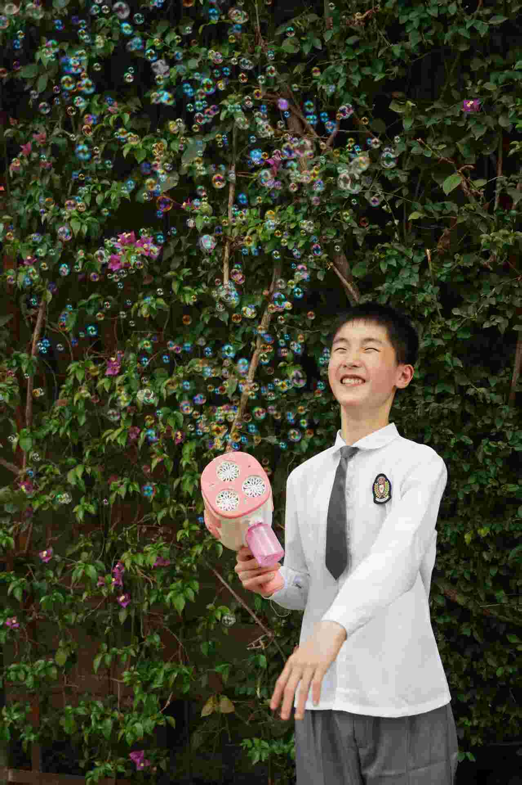

王：“你是不是又动我日记了？”
其他人：“没有。”
王（着急）：“我都跟你讲了不要动我日记！……”
0天
0时
0分
0秒
今晚我家只有我一个人，我可以把所有都发泄出来了！我已经放弃了，没有开玩笑，不要有谁再给我提“童钰轩”三个字昂，就让这1698天的喜欢全部都化为灰烬吧，就让这42天的想哭全部给我哭出来吧。
每个班都有各种各样的学生，他们各显神通，造就了一整个班级。
注：网站中的学生数据是截至毕业时的，在毕业前转学的学生未统计。外号
与“王湘琳”谐音。
王人妖王湘琳性格像是人妖。
顾兮王湘琳常用网名。
白狐网名。
无声网名。在王湘琳书包内发现。
白野网名。较为冷门。
名言
我不小心踢了一下陈宇恒的肛门。
我的书值十万元。
五年级前，王湘琳仅在“特殊时期”登场，如被打红脖子等。
自六年级以来，她就逐渐变得“名声赫赫”——原因原来是……
六年级上学期时，王湘琳有一本日记本，不过是拿英语笔记本改的！
要做日记本，那还得看王湘琳。首先，准备好一本刚出生的英语本，上面有着“英语”二字，里面没有任何字迹。本子的整体呈褐色，封面材质应该是牛皮纸吧。
这时，一个很重要的工具——涂改带就上场了。
准备好涂改带，并将“英语”涂掉，这样，英语本就初步具备了变成笔记本的条件。
但王湘琳这种人，肯定不会满足于这种简陋的本子——她偏要给日记本一点装饰。于是，她又在下面涂出了一个框，接着又在左边画出三列。
最后，在原来“英语”的那个区域写上“日记本”，下面的方框写“心情本”，然后即兴发挥一段：
我们每个人都有七情六欲
喜怒哀乐悲恐惊
酸甜苦辣咸
再加个笑脸，左下角写个“顾兮”这本日记本就做好了！虽然封面不怎么样，但能用就很好了。
封面做完，接下来就开始写日记了。你以为她的日记里只是什么ET、CT的事件或者学生八卦？里面的确有八卦，只不过是她自己的。
六年以来，班里喜欢人的人不少，但是像她这种执迷不悟的人不多。这不，她的日记是以“分”为单位更新的，具体内容则是写她喜欢的人。
至于王湘琳是何时喜欢上余佳皓的，我们不得而知，只知道她地失恋日期是9月15日，她就是在这一天开始写日记的。
正因如此，她对自己日记的防备等级极高，绝不许有人看到，否则后果不堪设想——可能是她的崩溃或者疯狂反击。结果，日记本反而成为了“重点对象”，不少人慕名前来偷看，导致王湘琳一感觉日记被偷看就会严加拷问。
王：“你是不是又动我日记了？”
其他人：“没有。”
王（着急）：“我都跟你讲了不要动我日记！……”
成功偷到日记的案例也不少，如李诗彤就曾在午托时翻出日记本并拍照。另外，在一次ET看班时，蔡宇城就把王湘琳用涂改带涂抹的“保密”部分刮开，令王湘琳哭了一中午。
原来，涂改带涂掉的部分就是王湘琳的“绝密”，类似的还有：
王湘琳日记的加密部分
原来的内容
除了写与余佳皓的故事外，她还写了：
《莲花楼》《叶》《叶2》《叶3》《斗1》《斗2》
我失恋了，55555我好想哭，我好希望今天、明天他能去广场踢球5555555我错了，你不要不理我呜呜呜……我以后都听你的话，你不要不理我好不好啊……呜呜呜呜呜我好心痛啊余jiāhào
余佳皓，你不要不理我好不好啊×10我想哭，我闰闰说让我和他分手啊×20。而我不想分啊×30，她说他不会做饭，没有fj，让我快分55555，她还说他是渣男，我不信她。哎，他今天对我好冷淡啊×5
啊啊，好开心，他和我道歉了啊×40，哈哈，那他今天可以出来跟我踢球。
无语了，一个人都没有，呜呜呜他啥时候到啊cos：希望他可以7：00动身。
呜呜呜×50，他好慢啊，他为什么要7：30动身啊，啊×60他就不能快点吗，呜呜呜想哭呜呜呜×70
呜呜呜，有人让我和他去找1698，哎，我想哭他就不能快点吗？这里只有我了他不能快点吗？还有十分钟我能坐的了吧……
无语了，我出来玩看到小绿茶了，呜呜呜无语死了，不能让我好好玩会儿吗？呜呜呜她一直想看啊×10，无语了
呜呜呜，我今天吃醋了，他不知道我tm想死的都有了，我tm都哭了，他也不知道，还和他们踢球，m的下次不带了，啥也不带，气死他，把他气死，然后给他买个棺材，把它装进去，再给他一巴掌，把他扇死。cso：他说过不再和小绿茶玩了，说到她m的她今天和他挨得好近，真的想过去给她一巴掌呜呜呜×100想哭……×1万
家人们谁懂啊，m的我昨晚哭了一小时，哎我和他要分吗……呜呜呜昨天他让小绿茶出来玩，tm的让我哭了一小时，我要分吗？等待中……卧槽！不要那我还分吗……哎我听着悲哀的歌，我又又又又又又又想哭了，Bye……
后来，在一次午托，王湘琳把日记交给余佳皓保管，至今下落不明。
王湘琳买了一个芒果造型的夹子。因为这芒果的颜色偏黑，跟余佳皓的肤色类似，所以王湘琳就把它当成了余佳皓，结果……
CT想把书夹在展台上，可是讲台旁的夹子都太小，不能用。这时，王湘琳拿出了“余佳皓”，递给了CT，CT看到后，夸了她几句，然后拿去用了。王湘琳则哭笑不得。
这还没完。CT走下讲台，准备将夹子还给王湘琳，走了一半，CT突然说：“这是我的发卡~”同时将“余佳皓”往自己的头上一夹——王湘琳苦笑着接过了夹子……
例如一次午托，王湘琳在纸巾上写“我喜欢余佳皓”。还有一次，王湘琳让我写立体字：
WXHYJH
YJHSWLG
WSYJHLP
是不是挺深奥？别急，让我们来翻译一下。其实，这三行字就是拼音简写。
WXHYJH：我喜欢余佳皓
YJHSWLG：余佳皓是我老公
WSYJHLP：我是余佳皓老婆
那段时间，陈旻希完成了写1698个“刘圭宥”的壮举，于是王湘琳也开始写“余佳皓”，最终写了520个！
注：上下滑动查看更多“余佳皓”正因如此，她对“余佳皓”三字极其敏感。又是一次午托，同学们正在午休，教室里格外安静。这时，两个人从门口走廊跑过，其中一人喊：“×××和余佳皓在三楼拉大便！”当时她的心情也是无法用语言描述。
数学课上，MT经常提到“<（小于）”、“1+2”、“加号”等词语，这也会引起王湘琳极大的反应。
现在，我也不知道她还喜不喜欢余佳皓。只知道有一次放学时，余佳皓在楼道上骂她是女鬼。后来，王湘琳在班上骂余佳皓是空气、狗屎、傻子。
所以，只要有人说出令她不满意的话，那人就会遭受痛击，若痛击无效，她就会用冰冷的语气说：
你完了。
例如陈宇恒。陈宇恒是最常被王湘琳欺负的人。由于两人只有一组之隔，每当陈宇恒有什么动作时，王湘琳首先会用脚猛踹，倘若这节是自习的话，还会手脚并用，打的陈宇恒连连求饶。
还有更经典的，就是陈宇恒午托时在楼下正走着，王湘琳突然朝他的屁股踹了一脚,回来后王湘琳还拒不承认——结果不久陈宇恒就去告状了。后来，面对MT的审问，她还装作一脸无辜的样子，说：“我不小心踢了一下陈宇恒的肛门。”陈宇恒甚至为此写了一篇作文，名叫“肛门事件”，参见陈宇恒。
从此以后，王湘琳就像发现了新大陆一样，与陈宇恒一有不和就威胁：“小心你的肛门不保。”
到了六下，虽然不拿肛门威胁陈宇恒了，但是还是得打，不信可以去看毕业照那天拍的微电影（纪实篇），上面就有陈宇恒vs王湘琳的场面。
在CT面前则不然。王湘琳不但不敢打人，而且还得反手被CT“摩擦”，因为CT会在全班说王湘琳的黑历史。有一次，王湘琳说中午CT找她，对她说：“不要再喜欢别人了哈！”然后王湘琳就很纳闷了：他怎么知道我喜欢余佳皓？！
这还是好的结果，重点是CT经常在班上当面贬她，还是带着暗示的那种。如：
你又放花痴了~
这个人有点早熟~
把一个男生的名字写一千遍~
像是放学到门口找他、下课带上东西默写等招数，CT都屡试不爽。
还有一次，CT偏题道：“黄老师的老公也是我的学生……”被王湘琳拿纸条记录下来了。后来CT发现后，也是没给她一点面子，大声念道：“黄老师的‘脑公’是杨老师的学生……”
王湘琳以前就有外号（王昌龄），自从失恋之后，外号更多了。
曾几何时，同学们发现了她的网名——顾兮，结果一下课，同学们（陈忠宇喊得最起劲）就阴阳怪气地喊：“顾兮——顾兮！……”而王湘琳则会抱着头喊：“哎呀！”有一次早读《穷人》同学们读道：“近义词：顾兮（顾惜）——爱惜！”
上课了，同学们也不消停。像王湘琳的“好邻居”陈宇恒就会小声地喊她的网名，也会引起她极大的反应。从此，看王湘琳就成了一种“娱乐方式”。
就因为这样，王湘琳又多了个外号：王人妖。同时，她的第二个网名——白狐被爆了出来，她甚至还在午托时说自己还有一个网名。六下时被查出来了——就在她的书包里。上面写着“顾兮、白狐、无声、琳”。
这就是王湘琳在六下的主要八卦了。王湘琳很喜欢看唐家三少的作品，人尽皆知的一套就是《斗罗大陆》，不过，她还看过《天珠变》、《神印王座》等书籍，总之都是唐家三少的（当然她还有看过非唐家三少的作品，如《轻吻星芒》、《樱语年光》等）。同学们都说这是“小黄书”（就连CT也这么认为）。尽管王湘琳再三解释，但还是无法改变其看法（王湘琳日记中的“《斗1》《斗2》”说的可能就是《斗罗大陆》）。
对于《斗罗大陆》，王湘琳是一本接一本地带来，不知道她哪来的那么多钱买书。不过可以确定的一点：她不希望大家知道《斗罗大陆》里的细节。如书中的扉页有一个网址：http://zntsts.tmall.com，明明是“中南天使图书专营店”的网站，她就硬是不让人看，说是她哥哥搞的网站。
她还经常在朋友圈发“神印王座站位”的视频号，并有“爱了爱了~”、“啊啊啊啊啊啊啊！”等配文。
王湘琳看书时还经常会做小动作，例如在午托班时，王湘琳看书看到刺激的环节了，她就会在抽屉里做出“一闪一闪亮晶晶”的动作；看到令人伤心的环节了，她还会跟着伤心。一次她与陈忠宇谈论这本书时，还做出了撸管动作。
别人每当说出一句正常的话语时，王湘琳就会大喊：“啥？！你喜欢×××？”例如陈彦豪模仿道：“陈诺呢？”王湘琳就喊：“啥？你喜欢陈诺？”
王湘琳喜欢听音乐：她在她的其中一个U盘里有“曾暖暖古筝”文件夹，里面是一堆（纯）音乐，如：我的祖国、白狐、千年等一回等。六年级时，她还经常带无线耳机、手表和充电宝以便在午托时听音乐。
当然，王湘琳的梗不止这些，还有：
王湘琳用手表发朋友圈：“考试中”并配上视频
王湘琳用手表发朋友圈：“一人一句假话，我不喜欢余佳皓。”
王湘琳写下日记
王湘琳送余佳皓礼物
陈忠宇喊“小余~”导致王湘琳崩溃
王湘琳在纸巾上写“我喜欢余佳皓”
王湘琳在日记本中写了一个大大的“我爱你”并用涂改带涂掉，然后写上“加密”，结果涂改带被蔡宇城刮开导致王湘琳哭了一个中午
王湘琳：“我如果英语考及格了就去找余佳皓生猴子。”
王湘琳骗我说：“我当着余佳皓的面把日记烧了。”
午托时外面有人喊：“×××和余佳皓在三楼拉大便！”
王湘琳找我写立体字：
WXHYJH（我喜欢余佳皓）
YJHSWLG（余佳皓是我老公）
WSYJHLP（我是余佳皓老婆）
王湘琳：“余佳皓骂我女鬼！”
“你是不是又翻我日记了？”成为经典
“顾兮”这个网名被全班知道
李诗彤翻王湘琳日记并拍照
王湘琳频繁到门口找余佳皓
早读时，同学们读近义词：“顾兮（顾惜）——爱惜”
王湘琳把余佳皓（芒果夹子）借给CT。CT归还时，突然说：“这是我的发卡~”同时将“余佳皓”往自己的头上一夹
王湘琳在课上写诗被CT发现。CT：“你又放花痴了……”
CT：“这个人有点早熟。”
王湘琳踹陈宇恒屁股却拒不承认，还在MT面前说：“我不小心踢了一下陈宇恒的肛门。”
王湘琳写520个余佳皓
CT：“把一个男生的名字写一千遍~”
MT处理王湘琳问题
王湘琳骂余佳皓空气、狗屎、傻子
王湘琳：“余佳皓家暴我！”
王湘琳和余佳皓的孩子被命名为“鱼丸”
王湘琳开始看唐家三少作品
王湘琳偷拍MT、CT、ET
王湘琳得知余佳皓小名（兔兔）
外号
CT对瞿明爔成绩优秀的称呼，也是同学们称呼瞿明爔最常用的外号。
标杆同上。
霍明爔“瞿”和“霍”相似。
西瓜条因瞿明爔有一件黑绿线条相间的衣服，颜色与西瓜相似，所以被称为“西瓜条”。
2>3 草履虫瞿明爔自称。
不潮少年瞿明爔的某件衣服上印着“不潮少年”四字。
名言
最……的一集。
在学霸中，当属瞿明爔最为显眼。他在老师及家长眼中印象极好。
瞿明爔的衣服有黑绿线条交错（简称“西瓜条”）、“不潮少年”、5月27日等款式。
而头发从后面看，好像是倒三角样式的。有时候，同学们会说：“男神有呆毛！”让瞿明爔不得不用手捂住头。
最引人注目的要数那副眼镜，这是瞿明爔最形象的一个特征，每当有人画他时，眼镜都是“标配”（如李诗彤画的艺术字“瞿”）。瞿明爔的眼睛包括蓝色和黑色，镜框大致呈半圆形，是瞿明爔上小学后才开始戴的。
瞿明爔的表情也很特别，总会做出一副诧异、惊讶的样子，这种表情在拍毕业照时得到了很好的体现。
瞿明爔是“假惺惺”中的一员，经常在课前帮忙挑选上等粉笔供CT使用,屡次被CT表扬。又因为瞿明爔学习成绩很好，于是得到了CT的大加赞赏与看好。例如CT称呼他“男神”“标杆”，还说“班上所有的人都比不过一个瞿明爔”。此外，当瞿明爔优化被折时，尽管他在CT说出这件事后很久才拿上去给CT，也未受到惩罚。
一次语文课上，就因为瞿明爔请假，而导致班上的读书声小了一点，结果就被CT说了。
瞿明爔上课经常做小动作（尤其是语文早读），例如：
瞿明爔会把双手由下至上地拖住眼镜，缓缓摘下，并把眼镜放在桌上闭目养神。
一次早读时，瞿明爔做出一个怪异动作：一只手摸着后脑勺，另一只手放在了大腿内侧的部位上。
瞿明爔曾挠了一下头，然后将挠过头的手指放在鼻子前闻味道。
五年级（或四年级）时，班里突然传出“瞿明爔喜欢陈诺”的消息，当时在班上引起了热议。至于消息对不对，可能得看下面的证据了。
瞿明爔曾在军训时献唱《青花瓷》引起热议。另外，他与郭吉家关系密切，下课时经常一起聊天，还多次谈论《哈利波特》中的内容。
外号
五年级时，刘圭宥发了一条朋友圈，出现了“就让这1698天的喜欢全部化为灰烬吧，就让这42天的想哭全部给我哭出来吧。”而得名，“42”同理。
42见“1698”。
乌龟由于郑隆俊被称为“潮流王八”，而刘圭宥又与他玩得很好，就被叫做了“乌龟”。
闸总期末考后一天时，因为我拍他丑照被打而引起大家议论，得名“杂种”，又与“闸总”谐音。
比亚迪因说过名言“你连比亚迪都买不起”而得名。
女性乘务员李诗彤曾用手表识别刘圭宥照片，识别结果是“女性乘务员”。
龟幼谐音（用于书面）。
名言
今晚我家只有我一个人。
陈诺呢？
我满脑子都是陈诺~
你连比亚迪都买不起。
我有6块腹肌。
我觉得劳斯莱斯不如迈巴赫。
装什么。
请你们喝星巴克（蜜雪冰城）。
刘圭宥也是经典的学生之一，例如那条“今晚我家只有我一个人”的朋友圈就是他“精心撰写”的。
刘圭宥是学校大队委（三杠）以及（以前）执勤队员之一，还多次登上教学楼旁那块“阳光少年”榜。另外，东升小学官网也多次出现刘圭宥的身影。
官方是这样介绍的:
小个子蕴藏着大能量，阳光如我，快乐如我！
我是三年（1）班的刘圭宥，任校少先队执勤队员、班级学习委员。在东升这片沃土上，我从一棵稚嫩的幼苗成长为一个勤奋上进，多才多艺，知书达理的新时代少先队员。爱班级，爱集体，爱学习，爱书法，爱音乐，爱运动，……阳光上进的我将走得更远。
刘圭宥三年级时的照片也在那里了，这些照片还被做成了表情包。同时，他的多张毕业照在班上也有很大热度。
刘圭宥特写
“因为立了很开心”
但是，他在CT的课上就不一样了。CT多次说刘圭宥的大队委席位不保，对他的印象不怎么样。
刘圭宥六年以来最经典的桥段当然是那条朋友圈了。前一天刚发出去，第二天就在班上炸开了锅！
今晚我家只有我一个人，我可以把所有都发泄出来了！我已经放弃了，没有开玩笑，不要有谁再给我提“童钰轩”三个字昂，就让这1698天的喜欢全部都化为灰烬吧，就让这42天的想哭全部给我哭出来吧。谁要是再给我在那里狗叫一句啊，我特么直接一巴掌给你干过去！说实话，我是真的一年级开学第一天就喜欢上了ta，而且以前我妈不在家的时候把我扔到ta家，都是我自己提出来的，只为多看ta几眼。但现在呢，就算了吧，也不可能了。就让这泪水全部都流出来吧，撕心裂肺地哭出来吧。反正也只有我在家，也没人管。ta的生与死，喜怒哀乐，都与我无关了。也许像三叶和阳菜这样好的女生只有在二次元出现吧。像新兰这样的情侣，也只有在动漫里有吧，我也不想多说什么，只能说心碎了，碎了一地💔。但是也要乐观一点吧，至少在小学生活中，喜欢上了一个人的漂亮、学习好，但是不喜欢我的女孩子，ta说正在想要不要把我拉黑。我反正随便，你拉不拉黑我都愿意，你就算删了我都不会想再开始加，忘了你最好，反正没你我也能活，也有其他人会跟我聊天，不需要你来填满我的生活，谢谢你，能遇见你我真的很荣幸，但是现在，不……这么……想了……💔💔💔
第二天，这条朋友圈就被郭吉家复印了多份，还分发给了瞿明爔、林煜昕等人。当刘圭宥来的时候，同学们纷纷起哄，到座位上时，刘圭宥早就脸红了。从此，刘圭宥就有了俩新外号：1698和42。
另外一件事情是，同学们看见朋友圈中“不要有谁再给我提‘童钰轩’三个字昂”，便把“童钰轩”涂掉，改为“TYX”。
以至于期末考后，同学们纷纷将刘圭宥推向童钰轩，并齐声大喊“表白！表白！”结果就被别班老师训了。在第二个学期时，ET还让刘圭宥与童钰轩俩俩对话，同学们也起哄了不少时间。
一次语文卷子上有一篇习作，让写童话故事，结果李诗彤就代入了“1698”、“42”两个词（如今这篇作文已失传），大概内容是：熊1、2、3、4、5、6、7在114514号房间内被蛇咬，熊42用手机给熊1698打电话，熊1698骑爱玛电动车赶来煮了蛇，说：“啥熊都有，啥蛇都打。”
毕业后，李诗彤在同学群中提到这篇作文，结果MT评价：“写的挺好的”、“感情很丰富”。重要的是刘圭宥甚至回复了：
已经可以去死了
据郭吉家透露，刘圭宥曾发朋友圈：“如果有人说‘1698’的话，我就一巴掌扇过去。”一天郭吉家骑车看到刘圭宥，就给他朗读1698，结果刘圭宥就来推车（没推倒），然后就在那扇郭吉家。
我们想在刘xx面前朗读“1698‘名著’”然后我们一路追，他们走楼梯，我们坐电梯，我随便按了一个四，结果他们正在四层，我们一路追追到了8层到九层楼梯间，战斗就是这里打开的，他先动的手（后面没记住）然后被我摁在了墙上，然后开始咬我（现在手上的一道疤就是当时留下的）而我在扇他巴掌，后面又不知道怎么了把它放开了，然后他提自行车没提起来（期间又过了许久）本来要收了，结果把我手机弄掉了，然后又开始了我把他摁在墙上打他的头，他嘴里还说着“你很会打嘛”然后我想揪他的头发往墙，被cn制止，结束后他又去问中岛为什么不帮忙
毕业考结束后，刘圭宥又说要在星巴克（蜜雪冰城）请客。结果我给刘圭宥展示和李诗彤的语音通话页面，然后发生的事成了经典：
（星巴克店内）
刘圭宥一看，也没说话，只是潇洒地从座位上起来，绕过桌子来到我旁边。然后，他用左脚猛踹我，踹了几下后又打我头，口中大声地说：“操你妈操你妈操你妈！……”惹得星巴克店员看了这一眼。同时，刘圭宥伸手抢手机和自拍杆，闹了一会儿才走。
我展示刘圭宥证件照时也是同样反应。刘圭宥和郑隆俊、刘子岑关系很好，经常放学和那两人回家。
三人一起回家
另外，他似乎显现出对陈诺的喜爱与赞美之情。在军训时，他曾说过：
陈诺呢？
我满脑子都是陈诺~
当然，目前已经确定，刘圭宥喜欢李诗彤，这一点早在毕业前就有体现，如刘圭宥把一整盒魔芋爽送给她。不过如何证实呢？据李诗彤透露，刘圭宥写了一篇很长的作文：
嘿 你这个时候肯定睡得很熟吧？知道吗 我有好多好多话想对你说…还记得以前刚上一年级的时候么 那时的我还挺内向的 我习惯性的会扫视完整个教室 想找到一个同道中人作朋友 当扫过你时 我的眼睛停顿了一下 第一眼就感觉是一个很可爱还有点腼腆的小女孩 你就一个人坐在那 看着别人一起玩 也想加入他们 但是不知道为什么 明明那么想一起玩却只能凑过去看他们玩 跟我惊人的相似 我觉得我可以和你当个朋友 但后来并没当上朋友 具体原因我也忘了 直到三年级 这就是我对你全部的印象了……
我喜欢你 李诗彤 非常非常非常喜欢 感情真的会让人忘乎所以 我发现上一次体会到这种感觉还是在一年前 你是个很棒的女孩 我愿意为了你而改变 你永远是我心中最耀眼最美丽的女孩🧡🧡🧡
拍毕业照前一天晚上 你又有不会的题 又来问我（那时还觉得你怎么这么笨啊😂）第二天 你打扮的很好看 不只是很是非常 中午到时候 我们一起玩真心话大冒险 你不是让我抱cmx么 然后我不肯 你居然直接抓住我的手把我推了过去 你那时应该没注意到吧 我一直在看你 我的心跳好快好快 喜欢上你的幼苗估计就是在这时种下的吧 后来 我上台唱歌 你跟着我一起唱 我抬头偷看你一眼 笑了 不知道怎么形容 应该就是喜欢上你了吧😳回去后 我们聊了一会 我对你的喜欢达到了顶峰……
上了三年级之后 我对你最最深的印象 大概就是五年级的时候 那时的我喜欢上了一个女孩 你有恰巧是那个女孩的朋友 你天天笑我 笑我舔狗 那时我其实还挺讨厌你的说实话😥等到六年级以后 事情开始慢慢淡了下去 我又重新“鉴定”你的性格 六年级的你没了一年级时的可爱腼腆 变得开让大方 我也是 我一直都不喜欢crj 甚至觉得她有点烦 还记得那个福字么 那时我的眼前有两个人 就是宝宝你和crj 我不由自主的就给了你 不知道为什么 那天回去以后 我和你第一次真正意义上的玩了一次游戏 逐渐我觉得你还挺搞笑的哈 搞笑里还透露着些许可爱 你以前长得很好看 现在也是 我会不由自主的在上课时看你几眼 有一次还被林老师看到了【捂脸】然后就是毕业照那两天了……
他给李诗彤发的消息也是非常炸裂，比如下面的（被李诗彤回复“操”）：
游戏开始！
第一印象：美丽
微信备注：诗彤
怎么认识：小学
好看吗：好看的
喜欢程度9/10
玩游戏要付出代价的：“朋友圈或空间发写“你点赞我给你发第一印象”不发者就当我看错你了，跟我一起被迫营业（挂一天）（我也是受害人）😍
甚至还有：
宝宝
我突然发现
我的鸡巴好大
你要看吗
一次，李诗彤说要去洗澡，刘圭宥就发一个表情包，上面写着：
看你洗澡
还有：
刘：我为什么要发
刘：【表情】
李：lgy怎么不讲话
刘：你发的什么东西
刘：【表情】
李：【表情】
李：我发什么了？
刘：当我不看
刘：【图片】
刘：【图片】
刘：等你下课
刘：着急什么
刘：态度一点也不好
刘：【表情】
刘：买了
买了什么呢？刘圭宥发了两张盒装魔芋爽的照片——一盒麻酱味，一盒香辣味。
李诗彤还提供了一份录音：
同学们都说刘圭宥很“装”，当然这一点也不是没有依据。如：
你连比亚迪都买不起。
于是，这句话成为了班上的经典，还被同学们改编成“你连排骨都买不起”“你连喉结都摸不起”等话。
我有六块腹肌。
这些话就是出自刘圭宥之口。另外，他与李诗彤的聊天记录也是非常震撼，“宝宝”也不知道叫了多少遍。以及：
……
刘：我直接一年开上劳斯莱斯
刘：【表情】
刘：迈巴赫更便宜
刘：600多万的680
李：😍
刘：劳斯莱斯库里南要1000万
李：长啥样
李：好看吗
刘：我觉得劳斯莱斯不如迈巴赫
李：【捂脸】
刘：【图片】
刘：【图片】
刘：【图片】
刘：【图片】
刘：真的帅
李：😍
刘：迈巴赫永远的神
刘：【图片】
刘：劳斯莱斯也不错
刘：但不如迈巴赫
星巴克事件当天，刘圭宥不仅请大家喝星巴克（蜜雪冰城），还和郑明洋、陈锐、郑隆俊一起在蜜雪冰城旁吃臭豆腐（也可能是关东煮等）并给了每人10块钱（纸币）。在买完蜜雪冰城后，他带领其他人又回到了星巴克，坐在星巴克里面喝蜜雪冰城，可谓“仪式感满满”。
刘圭宥到了初中，他“装”的本质仍未改变——他的朋友圈就能证明。
初中阶段，刘圭宥分别考了一次数学满分和英语月考段一，于是他分别发了就两次朋友圈，图片中是卷子上的成绩特写。并配文：
叫啊叫啊
英语段一！叫！！！！！
另外，开学以来，他曾多次发文吐槽班上学生。有一次，他吐槽的内容极其炸裂，是这样子的：
吐槽!!!
我真的fla，某些人真的……….首先呢就是那个i某某啊，MD跟nz里长zc了一样，MDzfl，我说话关它p事啊，跟个sjb一样，zfl。还有就是那个死胖死胖的那个cx啊，MD身上一股hc还天天粘着我，MDntm是wy犯了吧，你爱抱你爱勾肩搭背你跟那个i某某勾去啊抱去啊，也是跟脑子长zc了一样，一群cx!!!
不久后，他又发：
我靠我又来吐槽人了！
md忍很久了一个个死j
首先呢 第一个就是那个jcy啊 我靠我真的服了 tmd你到底有没有长脑子啊 还是脑子里全长满了痔疮啊 qnmd你是对别人的老二有什么特殊的执念吗 tm天天捅 这我还能忍 但你tmd你输不起别玩啊 我“稍微”骂的脏一点就开始急 开始动手了 呵输不起就打人是吧 你家爸爸就是这么教你做人的是吗 你的jb是申请了什么专利是吗 世界顶级文物是吗 凭什么你能捅我我就不能碰你了 贱的要死 我去你妈逼的
然后呢 第二个就是万人期待的lzh了啊🙂
尊敬的lzh同学 请问kiss别人是会给你带来什么美丽的快感是吗 请问你有没有考虑过别人的感受呢 你tm要是那么爱kiss那么爱舔 你干脆先去kiss我们美丽的jcy同学吧 然后再把我的野兔7舔干净了好吗 慢慢舔 舔干净点 就是你这个死贱逼踩的 你也是 你的鞋是申请了什么专利是吗 哎呦 你鞋子价值1000000亿亿亿啊 全球限量一只呢 好珍贵的 我们都穿不起呢 nmd凭什么你能踩我鞋我不能踩你鞋了 噢噢对不起 有没有冒犯到少爷吧 我qnmd 回到正题 你是以为别人很喜欢和你待在一起是吗 md每天身上一股狐臭 跟几百年没洗过澡一样 md还天天跟别人贴贴 你那么爱贴你去跟我们学校男厕所里的茅坑贴去啊 怎么不去啊 真的服了 还有我劝你不要滥用职权 我们是人 人是要呼吸的 是我睡觉的时候呼吸了冒犯到你了吗 是我睡觉的时候身上的肌肉组织移动了吗 还是我睡觉的时候血管里的血液在流动吗 还起来重睡 nm你要是再滥用职权 我直接*****
还有你长的很“帅” 我们都高攀不起 是的 我cnm 不想和你待在一起 不要跟我凑那么近 犯恶心
大半夜的不想吐槽了 下次再来👎
在下方又评论道：
还有某些人不要那么自恋 我没说你 不要等下又在那跟我急 要告老师 好好想想你自己的问题
不久以后，刘圭宥发文要开放自己的朋友圈让大家挖黑历史，不过部分内容被他清掉了，当然包括这两篇文章和1698作文。
2025年，刘圭宥给陈诺发消息：
cn你好
我是13岁的lgy
很高兴在2018年遇见你
我以好朋友的身份陪你过2025的春节【烟花】【烟花】【烟花】
不止今年，还有明年，后年，以后的每一年【烟花】【福字】【礼物】【红包】
刘圭宥还经常帮段长做事，如去每个班通知消息。
同学们都说刘圭宥的手机是“老人机”，原因是同学们一直发刘圭宥的丑照和八卦，刘圭宥竟然没有回复。
李诗彤说，刘圭宥怕狗。
他的住址（金辉伯爵山）也是一个很经典的东西，在CT上《董存瑞舍身炸暗堡》这篇课文时，李诗彤就曾将它拿去改编：“……解放刘圭宥家的战争开始了，同学们如潮水一般冲向金辉伯爵山……”。
刘圭宥在金辉伯爵山泳池
外号
林煜昕对她的称呼。
离世桶“李诗彤”谐音“离世桶”。
李石头“诗彤”谐音“石头”。
你只彤李诗彤是处于“食物链顶端”的人。
李诗彤是MT认定的14个组长之一。不过，她对叶宸铭、谢承志极不友好。
每逢改作业时，李诗彤就会提前对二人说：“如果你有错一道题，这张卷子就给我抄600遍。”然后，只要发现这两个人有错一道题，就会起身把卷子（丛书）狠狠扔向他们，同时愤怒地喊着一些话，如：“你们上课怎么都不听！……”
叶宸铭更难教。每次他如果没有量角器等工具，李诗彤甚至会把自己的东西扔给他。如果叶宸铭的作业有空白部分，还会给答案让他抄，或者让谢承志代写。
如果叶宸铭不仅不改，还捣乱的话，李诗彤就会使出绝招。她的手表里有许多人的电话，李诗彤将其中一个备注为“林老师”。每逢这种时候，李诗彤会说：“我现在就给林老师打电话。”然后当着叶宸铭的面拨打那个伪造的“林老师”并悄悄挂断，随后假装与林老师通话。
李诗彤与林煜昕（下课时经常跟她走；且李诗彤说“林煜昕是我的仆人”，见李诗彤网页）、陈盈如（李诗彤经常去她家，且午托时和她坐）、林安冉、陈鑫怡关系密切。
上面也说过，李诗彤与叶宸铭、谢承志不睦。叶宸铭只要有什么出格的动作，李诗彤就会卷起一本很厚的书，劈头盖脸朝他打去。六年级时，李诗彤还发展出了“滴滴代打”这项业务，可以帮人打叶宸铭。
她还喜欢“整”陈宇恒，曾好几次把水倒在他的桌子上，令陈宇恒不得不拿布擦；又或者是撕他的书。
李诗彤带的零食有：
李诗彤经常带（红色）魔芋爽到学校，或是在课上吃，或是在午餐班吃。有一次，李诗彤带魔芋爽被人发现，MT就让她第二天一人一包。
有几天，李诗彤带了纯牛奶来喝，于是被陈宇恒称为“母内”。
李诗彤也会带饮料来喝。李诗彤会在英语课上将饮料瓶用小刀切割成两半，有瓶盖的那一半就被叫做“酒杯”。李诗彤会把另一半中的饮料缓缓倒入“酒杯”，然后细品味道。
在午餐班时，李诗彤甚至点过麦当劳，拿来后在抽屉和陈盈如偷吃，汉堡、麦乐鸡、饮料俱全。
李诗彤自称是“ET真爱粉”，在ET的课上多次起哄、捣乱，曾被ET叫去过办公室。
李诗彤也很会整ET。有一次，李诗彤把粉笔切碎加水，准备做“粉笔蛋糕”。ET看见后问她这是什么，她就说：“老师我这玩的是新疆粘土，我特地从新疆买的。”
还有一次，同学们布置跳蚤市场。李诗彤就拿了一颗糖给ET，结果ET就说出了“哎呀我这一把年纪了还吃什么糖呢”的名句。
李诗彤在一段时间内喜欢做手账，为此还特地买了本精致的蓝色手账本。前几页的内容其实还算正常，但是翻到后面，就出现了一种“独特”的手账。只见上面贴满了英语书上撕下来的碎片，并用黑笔乱涂乱画，标题是“复古风手账”，旁边还有一行小字：“第一次做的！”
在艺术方面，李诗彤也毫不逊色。她曾在作文本最后一页画了一幅画，上有标题“震惊！ET怀孕三年未生！”下面则是一个跟米粒一样小的人（也就是ET），但是那人的肚子膨胀到比“ET”的身子大了上十倍，上面还有许多线条，颜色不一，表示里面是ET未生下来的胎儿。在“ET”后面还画了一栋楼，和ET肚子产生了鲜明的对比。这幅画旁边是类似短视频软件的一个头像和四个按钮（点赞、评论、收藏、转发）。
她还在ET的课上大胆吃零食，像酒杯就是这时候的产物。李诗彤还给“在英语课吃零食”这种行为起了一个好听的名字，叫“零食演唱会”。
李诗彤经常发出刺耳、魔性的笑声。
一次，CT突然说要检查春夏秋冬四首古诗，李诗彤情急之下，借走了我刚才的默写方格纸并撕去周围，还在每一句前各加了“春夏秋冬”。当CT检查时，这种“伪装”被不幸发现了，CT就大声朗读出来：
春：有意栽花花不发，无心插柳柳成荫。
夏：良药苦口利于病，忠言逆耳利于行。
秋：树欲静而风不止，子欲养而亲不待。
冬：常将有日思无日，莫把无时当有时。
又有一次，CT要求默写《浣溪沙》、《清平乐》的原词及翻译，李诗彤写道：
【宋】苏轼
游蕲水清泉寺，寺临兰寺，浣溪沙。
……
当李诗彤给CT检查时，CT完全没看到这里的问题，直接过关。
外号
吕楚鋆起的。
猴子CT起的。原因是叶宸铭的性格和动作颇似猴子。
叶沉迷李诗彤起的外号，灵感来源于“沉迷游戏”。她甚至说了一片绕口令“成名的沉迷还未成年，但是他因为沉迷于《沉迷游戏》而被陈名校长抓住……”。
叶球迷和“叶沉迷”同理。
山本彩迷谢承志为他起的日本名字。
例外CT对叶宸铭的学习失望，便干脆不管他，说：“它是个例外。”。
大爷CT在默写日积月累时整叶宸铭起的。
十七名言
宇环，你个变态~
我操你妈瞿明爔，什么“蜂窝煤蛋糕”，每次我都要饿死了。
我长大要买劳斯莱斯（laō sī laī sì̀）！清华，北大，是我们的目标，我长大要上工读学校……
算了算了，就来个蚂蚁生存吧。
滚！操你妈！
报告（baó gaō）~
叶宸铭被称为“猴子”，因为他非常好动，成绩还差，被多位老师“关注”，CT甚至直接放弃对他的教育。
平常，叶宸铭总会露出两颗门牙。
叶宸铭很怕狗。他每次放学都会提防周围是否有狗。例如有次放学我和叶宸铭走时，就有一条狗在前方。
叶宸铭正走在回家的路上，突然发现前面有一只大狗，于是顿时谨慎起来，蹑手蹑脚地走着，生怕惊动那条狗。但最后还是惊动了，只听狗“汪！汪！”地叫着（我甚至没看到那条狗是否追来），叶宸铭拉着我就往回跑。跑了一会儿，后面终于没东西了，但叶宸铭还是很怕，甚至想往另一条路绕。
要说叶宸铭最喜欢的东西，肯定得是哥斯拉（他的微信头像就是哥斯拉，尽管经常更改也一样）。
他还很喜欢恐龙——这一点曾多次被同学们调侃。这一点体现在：
每次他都能画出各种各样的恐龙以及士兵打仗场景，多幅画作被我收藏。
六年级上学期时，叶宸铭每天都会带他的小寻牌手表。拿来做什么呢？
他的手表里有个“小爱同学”应用，于是他经常用它播放各种古怪的声音。有一次，我让播放“喝酒的声音”，他对手表说完后，就出现了很大声的喝酒声音，吓得他赶紧降低音量（注：想听“喝酒的声音”的话可以对小米的智能产品说“喝酒的声音”。）。从那以后，叶宸铭每逢上课，李诗彤都会让他播放这种声音，并让他调到最大音量。叶宸铭也时常播放，且多次被吕楚鋆听见。
他还喜欢播放以下声音：
此外，小寻手表还有一个特别的应用，名叫“宠物养成”。点进去后，会出现一只卡通形象的猫，下方有两个按钮，一个给猫喂食，另一个就是变声器。只要说出一句话，就会得到这句话变声后的效果，所以经常被叶宸铭拿来玩。
他经常对变声器说的话有：
宇环，你个变态~
我操你妈瞿明爔，什么“蜂窝煤蛋糕”，每次我都要饿死了。
“蜂窝煤蛋糕”的来历是这样的：一次，瞿明爔讲数学五三时，出现了一道配有蜂窝煤蛋糕图片的选择题。
叶宸铭经常被李诗彤等人打。有一次，李诗彤又想拿书打他，结果叶宸铭“嗯？”的一声，做出防御的动作，即“双手握拳，左手举到额头前方，右手放到胸的前方”。结果，这个动作被周围的人模仿了好久，动作也是越来越夸张，从“嗯？！”变成了“啊！”，幅度也越来越大。
叶宸铭也很讨厌有人写他的黑历史或偷他东西。例如李诗彤在抽屉底下看东西被叶宸铭发现，他就以为是关于自己的东西。于是他一翻白眼，然后一只手撑在桌上，探过身，歪过头，想检查内容是否是自己的。不出意料，这又成了经典。
叶宸铭偶尔会发出常人不易模仿的声音，被我称为“弹簧音”。
一次体检测肺活量，叶宸铭与护士吵架：
医生：快点呀！
叶宸铭：你直接给我坐下！
医生：还什么直接给我坐下啊？，还敢跟我吵架呀？！
一次，李诗彤想要拍叶宸铭丑照，叶宸铭情急之下用优化挡脸。这一幕被拍下后，李诗彤就大肆宣扬：“叶宸铭导购优化！”
一天放学，叶宸铭正路过一家水果店，不小心弄掉了一个橘子。他“卧槽”一声，赶紧把橘子放回箱子里。结果这事被陈宇恒越传越离谱，如“叶宸铭打翻一箱橘子”、“叶宸铭偷吃橘子”。
一次考试后，叶宸铭说：
我长大要买劳斯莱斯（lāo sī laī sì）！清华，北大，是我们的目标，我长大要上工读学校！
叶宸铭喜欢“偷梁换猪”（他故意把“柱”说成“猪”）。起初是把别人的笔盒交换，后来特指跑到后面打陈宇恒。
叶宸铭曾把“避孕套”说成“幸运套”。
本来叶宸铭除了捣乱就不会干什么了。结果突然有一天，叶宸铭就懂了很多变态的知识。如，陈诺朗读作文时念到“金子”时，叶宸铭就说：“精子……”。他还常说出“精液”一词，并对“龟头”尤为喜欢，还画出一张变态画作。
叶宸铭喜欢在英语课上玩“窗帘大战”。每逢坐在第一组时，叶宸铭都会密切关注第四组的窗帘是否拉紧，若有出现“留缝”情况则会以牙还牙，把第一组的窗帘也留一条大缝，让第四组进一步拉开窗帘。若没有留缝，则会故意将第一组窗帘留缝。到最后往往是两边窗帘都打开，总之要让大家都看不清电脑，才是游戏的目标。坐在第四组时也一样。
一次英语课上，叶宸铭迟到，进教室时没有喊“报告”，于是就被ET赶出去重新进来，结果他进来后喊：
报告（báo gāo）~
有一次，李诗彤说：
叶宸铭周六晚上穿白色内裤！
叶宸铭的作文，篇篇是经典。
今天我在看着电视，电视里讲的是蚂蚁记录片，这是我看了一下时间9点了，要睡觉了，我很快就睡觉，我睡醒了一看，我竟然变成了一只蚂蚁，来到了一栋楼一看，我是怎么了，我不是在睡觉吗，我想我是在做梦吗，我自言自语的说，奇怪了，我做梦会梦家里有黄金、钻石、或擎天柱合金玩具和来到我的世界什么的，没想到变成一个蚂蚁可真是一个噩梦，算了算了，就来个蚂蚁生存吧这时我肚子叫了起来这又成了一个不好的声音，要知道肚子一叫，我就会想起我最吃食品名单分别有，汉堡，炸鸡块，比萨，北京烤鸭，章鱼小丸子，鸡蛋汉堡，蜜汁手扒鸡薯条，等等我最爱吃的东西。可这没有这些人间美味，这是我看到了有一个人在吃着炸鸡，有一些炸鸡屑，我一看眼睛都要冒星星了冲了上去，大口大口的吃了起来，把炸鸡屑吃了一个精光，这时，我看到了那人吃得时候几滴可乐滴了下来，我又冲上前，喝完了可乐滴后，吃饱喝足后，有两个蚂蚁走了过说：“蚊王要占领，我们的家园，你快去和我抗击蚊军，我说：“好。”
很快，我就到战场上，我一看吓得我一动不动，空中有20多只蚊子在空中飞来飞去，我看到，地上有一些蚂蚁尸体，我还看到了，蚊子中有些身有蚂蚁，这时蚊子大王，看到了我后说：“有一只肥大的蚂蚁，让我吸死你吧。”说着飞了过来。
我跳到了蚊王身上，一口咬破了蚊王身体，蚊王吸的所有血都喷了出来，蚊王说：“可……恶的……”然后一下子死了。蚊子们一看跑走了，这时我变回了人，我说这可真是一个奇幻的厉险。
11月18日，星期六，我和我妈去KTv给别人过生日，当我们到了现场809号房时，里面坐好几人了我点了好几首歌，可是我太矮，我很难把气球摘于是我妈帮我摘了下来，后来又发生了一次事，我又想看手机了，于是我让我妈给我开了后，我在那玩最多两个小时半小时的看，手机热的让我手一直，后来我认为一直玩手机有点过分了，于是我把手机关了，还给了我亲爱的妈妈，后来我开始，唱歌，歌唱得很，大家都在为我掌声。可在唱爱如火时发生了问题，因为爱如火是爱艺娜唱的而我是男声，唱这个让我格格不，我想如果我有不少各种声音就好了，在后来吃了蛋糕后已经12点，我们回家了。
有一次我写作业可太粗心了。
童年，好似一汪晶莹澄澈的清泉。那一件件童年乐事，就宛如那一只只可爱的小船，有几只精巧别致，饶有趣味的小船引起了我的思绪……
记得小时候到乡下，我最喜欢到田中抓东西，拿出网一撒，一收就有许多鱼虾，有时运气好，还可以抓到黄鳝。有一次过年捉了一条大黄鳝回到家放入鱼缸，几天后因为水质变异，死了。于是我把他炸了吃，说真的真香。
还有一次在西湖公园看恐龙化石，巨大的骨架出现在我们眼前，旁边写着霸王龙，我们后来，去看了剑龙腕龙……等等化石后，我们租了船在湖中开着船，吃东西，聊天，在阳光下前进。
还有一次，我们去花鸟哦市场买鳄雀鳝，看了各钟各样五颜六色的鱼，后来买了鳄雀鳝后，来到爸爸上班的店看着鱼吃着我爸朋友做的各钟各样的烧烤，喝着可乐那味道真是回味无穷。
还有在花海的一个个花，绿绿的草地，清清的河水。
在现实中乐有很多很多
在我上五年级的时候，学校举办了一个跳蚤市场，林老师给我们每人发了币后，我们都冲锋的士兵一样，冲进了人声鼎沸的操场，一进入跳蚤市场后就看到了一个摊位上有几个小笼子，笼子里有几只仓鼠我一看着摊位上的牌子写着，十几个字，一只十币，两只二十币，买四只送两个笼子。我走到一个摊位前，那摊位前，几个盒子有好多包棒棒糖，我一看一币一包，我又看到了，我的世界橡皮，于是我买了一个，这也让我的五币变成了四币，我打开一看，就只有一只僵尸和皮革头盔和一个铲子于是，我找到了三宝把这个卖给他后，告别后，又花了币买了一包棒棒糖后，和一个不倒翁后，钱就只有1币了，这时，我们要回教室了，于是我回教室打开了糖纸后，一个手雷形象的糖果，还有一小包跳跳糖，我把跳跳糖洒到糖上，吃完了后，放学了，我开开心心的回了家。
今天的跳蚤市场真是好玩
外号
“陈宇貆（huán)”的“貆”字形与“恒”相似，又与“环”谐音而得名。
小聪明MT对他的称呼，“大聪明”则是陈彦豪。
宇神 水果哥陈宇恒在午餐班经常吃自带水果，如西瓜、杨梅、火龙果、橘子、樱桃、山竹等，而被郑瑾烯称为“水果哥”。
陈宇恒身为“转学生”，适应力却极强，没过多久就与班上“融为一体”。他的体型属于班上少有的“肥胖”级别。叶宸铭甚至说：“他能煎出很多油。”
六年级时，陈宇恒凭借着自己的手表“闯荡江湖”。他经常用手表拍别人的丑照，不过流程可不简单。由于他的手表只有前置摄像头，他不得不抓住时机，怼脸按下快门，拍出来的多半是糊成一片的人像，其中一张被戏称为“苍蝇”。
就这样，他拍的多张刘圭宥照片被李诗彤做成表情包，非常经典。
陈宇恒在（对付同学）走投无路时，会使出他的祖传“秘法”——即将头靠近，并伸出舌头要舔人，仗着大家怕被别人口水舔到的心理劝退目标。
他还做过一道菜，名叫“汤包”。制作方法如下：
是不是隔着屏幕都有内味了？
陈宇恒经常在午托时拿水果吃，而且带过的水果种类繁多。具体有哪些呢？
陈宇恒很擅长破坏书本，尤其是六上书本，已经是“面目全非”。下面让我们看一看它是如何破坏（六上）书本的。
陈宇恒的语文书封面平平无奇,但翻开之后，你甚至看不到课题——因为全被他给挖掉了。当然，最牛的要数某一页单元指导，陈宇恒把路灯画成了男神，而整页的上方有三个大大的空心字：“杨SB”，下面写着：“笑笑的整你”，还画了CT的丑照。
再就是《夏天里的成长》的插图，陈宇恒把孩子的眼睛用矩形涂黑，并在右下角配上了“审讯”的对话。这还没完，他还把荷叶圈起来，写出半径让求这个圆的面积。
陈宇恒版数学书有个特点，就是封面的“数”字支持“翻盖”。只需往下翻，便可露出下面的“玄”字，连起来就是“玄学”。
一次家长会，MT让大家把数学书放在桌上供家长翻看，这时陈宇恒就尴尬了。
陈宇恒的英语书要数最特别的。封面全被圆规给刮到已经烂得看不清插图了，要不是有书皮支持，封面早没了。其次是里面。像整页没掉的、乱涂乱画的、抠插图的，已经见怪不怪了。不过这些不算什么，陈宇恒六上英语书最特别的地方在于有三个洞，其中有一个直接贯穿全书，你甚至可以把手指伸进去，然后直接从另一侧出来。有一次午托还被ET发现了：
那本书的封面被他搞成了“半透明”样式——封面都是用圆规刮下来的，只有书皮还在勉强维持着这层纸。“英语”二字也只看得见一半了，那幅插图更是看不到影子。
接着，一阵笑意涌上心头。看了一会儿，ET实在忍不住了，露出了那不算白的牙齿：“哎哟，你这书……是哪里买的，版本怎么还有一点不一样？”
陈宇恒：“版本过低！”
几个人凑了过来——包括罪魁祸首李诗彤以及ET最怕的学生蔡宇城，还有几个别班的人也跑了过来。
李诗彤：“老师你看这里还有一个洞呢！”
ET朝李诗彤所指的方向看去——果然有一个贯穿全书的洞，像一条隧道——就差把封面的正面也给挖了……
ET摸了摸陈宇恒的头：“哈，你还真是读书破万卷啊，到时候一定要留下来，等你八十岁的时候再看……到时候一定要留给你的孙子，让他（她）看看你当时的表现。”说着，ET开始翻书，每翻一页都像在开一个盲盒，总有意想不到的“惊喜”。然后，ET拿出了半页纸——正是被陈宇恒撕掉的。
“哈，你还挺有恒心的呀，我看你这是滴水穿石……哦不，滴水穿书，应该是宇恒穿书……”
对于新启航，陈宇恒倒没对它干什么出格的事情。只不过在封面上，陈宇恒贴了一张“福建京元餐饮管理有限公司”的封签，是在午餐班保温箱上撕下来的。
在六下时，陈宇恒立志要“保护英语书”，结果还真成功了。但“前言”一页还是被陈宇恒贴上了从京元封签上剪下来的字，连起来读就是“亲爱的福建京元餐饮管理有限公司”。
陈宇恒考试几乎次次不及格，那些错的题几乎都是空着的。当然，也有例外。比如填空题，陈宇恒的答案是：
长（ 不知道 ）cm
有（ 好几 ）吨
解决问题：
……，这个数可能是几？
答：可能是1、2、3、4、5、6、7、8、9、10、11、12、13、14、15、16、17、18、19、20
我家门口有一棵桂花树，每到金秋时节花朵纷纷飘落，留下一地暗香。树下生活着一群老鼠，它们活泼可爱“鼠丁兴旺”生了一窝又一窝。它们在这里繁生息，壮大族群。过着无忧无虑的生活。
那一夜，变故忽生。那是一个月黑风高，只能听见树叶沙沙作响，虫儿低声鸣叫的夜晚，一个顶着二十四k纯金般闪亮的老头走着小碎步，东张西望，眼睛滴溜溜地转着，盘算着要怎么干坏事，果不其然他向鼠之家下手了。他伸出了邪恶的大手捞起两只最大的鼠转身就起。他想：“今晚不虚些行也能饱餐一顿了。”
小鼠们痛失父母，悲痛欲绝，它们在月光下哭泣着，绝望地尖叫着，它们个个都想救回自己的父母，但它们区区“鼠辈”怎会有对抗命运的能力呢？从此鼠之家元气大伤。
你觉得这惨吗？不，“噩运专找苦命鼠”接下来这种事让这个愁云惨淡的家庭雪上加霜，那是一个雷鸣电闪，飞沙走石的午后，一只野狗经过鼠之家，忽然它定住了，它好似看见了最渴望的肉骨头，它望着其中一只小鼠说：“你不是我前世的爱人吗？你怎么在这？我们不是说好下辈子当狗的吗？你怎么在这养尊处优？”野狗在小鼠回想时一口咬住了它小鼠惊了一下便开始惨叫。可野狗并不想放了它，三两下把小鼠吃了进去，这样野狗以正当名利吃了小鼠。
时间慢慢过去，只剩下了一只公鼠它没有办法繁衍生息。几年后它们老了走不动最后它和大自然成为一体，只剩下了桂花树在空中摇曳。
父亲的爱是山，母亲的爱是大海而我妹妹的爱却是打扰我，抢玩具，和大哭大闹。
这天我正在写作文，他一下子冲进我房间，开始在我的床上跳：“吱！吱！蹦！”边跳边说：“哥哥你也来跳呀！可好玩了！”我并未理她。一会儿她下了床，开始要我抱：“哥哥！哥哥！我要你抱抱！”我不耐烦地说：“你去找妈妈抱！你怎么这样。”这时爸爸冲了进来：“来爸爸抱。”这才安静了下来。
暑假我用零花钱买了一些玩具，我准备写好了今天的作业去玩的，写作业时妹妹突然钻了进来，她溜了房间一圈，停了停就走了。几个小时后我吁了一大口气：“终于写好了！玩具！玩具。”我吓了一跳：“呀！我玩具怎么没了。我的玩具呢？奇怪明明放这的呀！”我急地直跺脚，好似热锅上的蚂蚁，急地团团转。我到处找玩具，这时我看见了我妹妹，她手上玩的正是我的玩具。我哭笑不得。最后还是以大白兔奶糖换回了我的玩具。真是小孩不做声一定在干坏事呀！
她对我大哭大闹这件事是在一个周末。我正在房间里安安静静地写作业，我妹妹敲起了我的门，一下两下，她开始踢门打门我无奈开了门没想她一进门就开始大哭起来我想给她擦眼泪她一下打开我的手，妈妈闻声赶来。怪我没有把她照顾好，我十分不开心。
后来我才知道打扰我是因为想引起我的注意这一切都是她对我的爱。
这本是一个晴天但意处总是比明天快一点儿。
那天我向以前一样，起床、刷牙、洗脸、穿好了衣服。这一路上风和日丽，晴空万里我下了车进了学校一路上一直觉得少了什么东西但我低头一看呀我竟粗心到连书包都没有带，于是我打起了电话：“妈妈妈妈我的书包没有拿请你一定要以最快的速度送来！”挂了电话我就看见同学们哈哈大笑原来我说的声音太太了被班上的同学听见了呀！我恨不得找个缝住里头，，脚趾都扣出三室一宁了。真是早知今日何必当初呀！
还有英语试时我因为粗心把几题的F写成了T把要写F和T的题写成了✓、✗导致我被扣了10分。
每次我都会粗心大意，我一定要改掉这个不好的习惯。
一次，他被王湘琳踢了肛门，还特地写了一篇作文。
这是一个平常到不能再平常的中午，我和一鸣哥哥~等哥哥~姐姐~玩跑跑抓。（吴一鸣）
这局我十分的不幸因为我当上了鬼，我四处寻找火龙果！”，这时，WXL出现了，WXL中指示意：“cnm陈宇恒SB，你能不能不抓我？我不想当鬼。”“好啊！我抓不抓你。”这样我和她擦肩而过。WXL心想：“好好好！口头答应背地里还想抓我！操你妈的。我要教训教训你！”“哈！”我应声倒地，“啊！王湘琳我操你妈你妈S了！WXL一惊心想：“没那么痛吧？”我忍着痛回到了班上。
午托班结束了，我们一次上楼，第一节课是林老师上，只见林老师面色凝重的走了进来，重重地把书摔在了讲台上“呯”“WXL、陈宇恒起立！”WXL大概也知道什么情况了，但不知是哪个二五仔告的密。来！WXL！说！你中午对陈宇恒干了什么！“我……我踢到了陈宇恒的肛门……”“大声点！”“我踢了陈宇恒的肛门。”“还有呢”！“我还相给十块钱让陈宇恒不要说出去。”“陈宇恒！你有拿这十块吗！”“没有。”“好。”“那这件事怎么处理WXL陈宇恒！”WXL支支吾吾说不出来。这时台下响起了阵阵笑声：“哈哈哈！肛门哥“我操你妈有病吧！”陈宇恒肛门哥！”“笑的这几个人！知识梳理，×三！”笑声一下子消失了。好！来继续上课！
虽然是上个学期的事，但这是永不漫灭的回忆！
外号
ET上课时教大家“Women's Day”（妇女节）这个单词，“Women”发音酷似“吴一鸣”而得名。在此之后，ET连续罚站三次，并让大家举起手，放学后拖堂到清校后。
777黄佳看班时派吴一鸣和张炜承扫地，因吴一鸣穿的衣服上有“777”字样而被称为“777”。张炜承因为是他的同桌，且穿蓝色衣服，而被称为“蓝777”。
吴一鸣在整个学校名誉极高，被多位老师夸奖，如“又高又帅的男孩”等。且多位老师让吴一鸣帮忙跑腿。
一节音乐课，全班因纪律不好被罚站到下课。钟老师突然指出最后一排有人讲话，同学们都说是吴一鸣，但钟老师却反对道：“怎么可能是他？一鸣可乖了。”
MT也不例外。每次午托结束时，他都让吴一鸣和张炜承去提凳子。且多名老师让他去拿饭、拿外卖等。
而且在午托时，郑岩鑫对他的待遇也很好，曾多次将教师餐给他吃。有一次，郑岩鑫在永辉生活买了很多吃的，让吴一鸣去拿。其中有一瓶可乐，同学们想要喝，均被拒绝了，吴一鸣却喝到了大口的可乐。


吴一鸣参加比赛
吴一鸣很擅长跑步，曾加入过田径队，在50米跑考试时成绩优异、名列前茅。正因如此，他成为了午托玩跑跑抓时影响力最大的人物。
吴一鸣与张炜承关系很好——两人有着相同的特点：都擅长体育、都是老师们的“帮手”。
在六下“班班有歌声”当天中午，吴一鸣到厕所换衣服，当时的情景是：吴一鸣站在小便池旁，有一大群人围观，吴一鸣在大庭广众下脱下裤子，露出黄褐色内裤（纯色），内裤最上方呈棕色，并有大写英文字母；神秘部位鼓包非常明显、突出，看起来很成熟。
外号
林煜昕体型的形象比喻。
Old Woman Pig“老母猪”（字面上）的英语。
老母鸡“老母猪”的衍生外号。
粉色眼镜林煜昕在以前戴着粉色的眼镜。
林浴巾谐音。
态度姐 老班长因她是班长而得名。曾有这样一个梗：“老班长吃鱼骨头！”
搬砖吴一鸣说的。
林煜昕从一年级开始就当上了班长，这一当就是六年，职位可谓是非常稳固。不过在六年级时，林煜昕的班长职位遭到越来越多的质疑，在ET的课上时经常被罚起立，在日常也不见得她有什么班长的行为。（即“不称职”）
林煜昕似乎很喜欢用“愿此去繁花似锦，相逢时依旧如故”这句祝福语，在拍毕业照当天就是以这句话作为对同学们的祝福的。
林煜昕写的字不错，还获得了很多奖状。
外号
同学们嘲笑郑隆俊（中岛隆骏）是日本人而起的外号。
潮流王八 耐克哥郑隆俊整天都穿一身耐克。
话说郑隆俊刚进小学时，表格上写的可不是“郑隆俊”，而是“中岛隆骏”。只不过，刚开始时还没有什么事，到后来，同学们就发现：郑隆俊是日本人！于是从此以后，对他的讨论就络绎不绝。
郑隆俊爱装，同时和刘圭宥、刘子岑关系密切，常骑自行车。
郑隆俊几乎每天穿的都是耐克的服装。有一件最经典的衣服，由上至下印了耐克的各种不同样式。
耐克衣服
他的鞋当然也是如此。因此有这么一句话：“身上的勾比卷子上还多。”
毕业留念册发下来后，同学们发现里面的一张图片中，郑隆俊两腿内侧的部分鼓包了，这张图也成了经典。
郑隆俊（从左到右第三个）鼓包
外号
叶宸铭起名。
谢橙汁谢承志自称。
名言
你他妈有毛病啊！
死妈仔。
关于谢承志六上和六下时的性格，可谓是截然不同。那时候，他刚坐到李诗彤旁，随之而来的是14个组长的诞生，也是谢承志的噩梦。每当有练习时，李诗彤就会说：“你要是错的比叶宸铭多就完了。”或者：“你要是错了五道以上就完了。”那时（六年级上学期）谢承志只能忍气吞声，默默承受着这一切——李诗彤改完练习后，还会把叶宸铭及谢承志的练习直接丢到前面，当然还会让谢承志帮叶宸铭订正。谢承志只能“哦”一下，然后乖乖执行任务。
可到了下学期时，谢承志不知跟谁学的，竟具有了反抗意识，例如会说“你TM有毛病啊”“操你妈”等类型的脏话。当李诗彤让他帮叶宸铭订正时，谢承志还会用愤怒的语气说：“他自己的东西为什么要我帮他订正？”
而且，他动不动就威胁要告家长、告老师。有一次，我把李诗彤吃完的魔芋爽包装扔到前面，结果把谢承志衣服弄脏了。于是谢承志就恶狠狠地威胁要告家长。
但他有时候也挺老实，比如我让他扔垃圾，他也没有阻止。
总之，谢承志的性格变化得非常快。
谢承志挺会唱歌，但是声音很“夹”。有一次，叶宸铭用手表拍到谢承志唱歌的画面（现已被谢承志逼迫删除）。
大海，啊大海，是我……
谢承志真的特别喜欢看那本《林长治讲故事》，几乎每天都会拿出来和叶宸铭分享。当然，他回家后还很喜欢看小说（是他自己讲的），要么是“七猫免费小说”，要么是“番茄免费小说”。
谢承志也会画人，经常临摹腹肌的纹理图，并画过欧榕、叶宸铭等人的头部写真。
他甚至写了个叶宸铭简历。
姓名：叶宸铭
性别：人妖
班级：六年（1）班
学历：小学没毕业
长相：头发乌黑，肤色偏黑，高额头，浅眉毛，小眼睛，大鼻子，羊嘴唇，小耳朵身材瘦小，身高0.001毫米，一身排骨。
经历：2012年从天而降，断了一身骨头，3岁，遇见屎递夫，爱上吃屎，6岁，得方天画鸡，杀义父，9岁，拜师孔子，变身金刚狼，拿爪子到处伤人，
后续见《宸铭传》……
有时候谢承志会跟叶宸铭讲话，叶宸铭就发现了谢承志的口臭。每次，叶宸铭都会说“嘴巴好臭啊”，就连李诗彤也感同身受。为此，叶宸铭甚至还写了多首关于谢承志嘴臭的诗。
叶宸铭
谢橙汁嘴臭
恶心像大便
是个老香港
真是香港嘴
谢承志曾有一个挂件，亚克力材质，上有“金榜题名”四字。一次数学课，刘圭宥讲完一页五三后，来到谢承志旁边等大家订正，结果他就对谢承志的“金榜题名”产生了兴趣，拿起挂件端详了一会儿。
于是，每当刘圭宥讲完题目来到谢承志旁边时，叶宸铭和李诗彤就会让他拿“金榜题名”。
每年上南平，这烧烤是必不可少的，今天的我，虽然生病了，但在心中，胜利的天平却向着“吃美食”！虽心向美食可我的身体不允许呀！所以我用笔记录下这一切
早上，阿舅一大早就去黄田买鸡肉、牛肉的，听阿舅说，早上表弟也闹着要去，还问我要不要理发，呵呵，一月理发，厕所里打灯笼，找“屎”！所以被阿舅骂了一顿。
中午，舅妈起了床，阿舅在给食物们配料，而妈妈以为我中署了，挽起袖子就是要给我捉痧，我一看在却难逃，念起了佛经，“阿弥陀佛”那是张口就来，可身子不老实呀，这一不老实外公就上阵，外公一上阵就老实了，可嘴不老实，那杀猪般的惨叫传遍了村子。从那天起，村子里多了一个传说，传说是：每当月圆之夜，就在山上在一座古屋里有小孩的惨叫，而进屋一探究竟的人，再未归来……
晚上，阿舅的烧烤神功大成！随着几串牛肉烤好，我也在妈妈不注意的期间溜了下来，吃了几串，那时，我想，这也就比老八蜜制小汉堡差点吧！
烧烤还是生病？我选烧烤！
在班里的每一个人，都有一个小梦想，有人要手机，有人要卡片，有人要书本，而我，一个小透明，却想想买彩票……
从小，我就有一个发财梦，哪天天降横财将在我身上了，那多好呀！哪天父母发财了，不用担心钱那多好呀！哪天我去买个采要，中个一等奖，百万资产就在眼前！可未成年不可以买采要，天降横财没可能，父母发财的白日梦，怎么为？等等！未成年不可以买，可我妈是成年人呀……
在昨天晚上，我问我妈：“妈，我们去买采票吧！”她绕有兴致看了看我，道：“好！可你不能进去！”我满口答应。今天晚上，我站在彩票店门口，傻笑着，仿佛面前有无数现金……
城市套路深，我要回农村！在寒假刚开始就回了老家。
一到老家，双胞胎二人就来迎我们！可我不知道为什么，他们看我的眼神有点奇怪
吃了晚饭过后，老大老二背着手，笑嘻嘻地说：“承志啊，你等一会儿，我出去给你整点吃的！”我隐隐看到他们手后拿着一个……巧克力盒？！
我有种不祥的感觉，
在家里，我苦思冥想，得出一个结果……他们想往“里面”整一点奇怪的东西！
十分钟后，老大老二回来了，手捧巧克力盒：“承志，来，吃点巧克力！”我想，他们应该不感做太过分吧！我拿了一个，一口下去，嗯？有点怪！酸、苦，有点儿像……羊大便！
我一下就怒了，告了家长。
老大老二家里传出奇怪的惨叫
在这一整个寒假，我对羊屎“念念不忘”，对老大老二“态度超好”！
每次午托，许逸晗（和林柳妍）就会带来各种各样的零食，种类极多，几乎都是散装的，如果冻、薯片。
林煜昕生日时，许逸晗也有参与。不过在去往万达的路上，许逸晗、张纤雅、童钰轩边走便拿着一本数学的习题集讨论。到了饭店包厢里也仍在刷题。
她和林柳妍由于在午托班，所以经常被ET叫到办公室批改卷子。
2024年寒假（毕业后），她经常和童钰轩在一起，具体可以看朋友圈——她们俩经常一前一后发几乎相同的内容。
外号
陈忠宇经常掀自己衣服，露出排骨。
陈忠宇属于班上最矮、最瘦的人之一。他还经常在午餐班“绝食”（别称“修仙”），有一次MT看班，需要查他的饭盒。结果陈忠宇把饭都埋在了菜里面。
不像其他人的笔盒（笔袋），陈忠宇的笔盒主打一个“极简风”，几乎都是很小的，甚至可以随身携带。至于原材料则是从生活中得到，如西洋参的包装盒。
陈忠宇的笔盒小，笔自然少。不过陈忠宇特别喜欢用百乐的文具，橡皮必须是“PILOT”（百乐），黑笔有很多只，但也全是百乐果汁笔。
曾经风靡一时的热梗便是陈忠宇的排骨。陈忠宇由于瘦小的体型，所以出现了特有的排骨。当然，他也不介意有人看他的排骨——他会当着全班的面掀起衣服展示。
李诗彤拍摄的陈忠宇露排骨照片
相传陈忠宇军训时，曾在宿舍跳“鸡鸡舞”。具体就是露出他的鸡鸡，然后开始跳舞。
陈忠宇习惯把“ET”说成“TE”。他曾说：“‘TE’是我们踢ET，而‘ET’是ET踢我们。”
外号
一次午托点名，老师讲他错叫为“吕楚銮”，后同学们又将他称为“吴楚銮”。
西瓜CT因他的头像西瓜而给他起外号。
吕楚鋆属于坏学生的行列，曾被ET撕过语文书。
吕楚鋆的头发茂密，曾被称为“蘑菇头”。CT也对他的头进行了“形象”的比喻，也就是“西瓜”。
一节英语课上，吕楚鋆被叫起立后脱鞋，露出了袜子，非常恶心。这一幕还被李诗彤拍了下来。
外号
CT起的。
坑姐CT起的。
江玥瑶身处后排，不闹事还好，一闹事就定能轰动全班。
MT告诉大家，周澎曾经离家出走。本来这也和江玥瑶没啥关系的，可是后面的事情却是：江玥瑶把他放在自己家中的杂物间，警察找到她家才发现人。
据同学们推测，江玥瑶喜欢作弊。如体育课上跳绳考试时，同学们就对她的成绩产生了怀疑。
外号
林泽晨经典的微信昵称，很久都没有变过。
睡衣战神林泽晨的外貌可以参考音乐书中的“洗星海”这个人，因为大家都觉得他像林泽晨，还把那一页拿去破坏。
外号
“鱼丸”谐音“予凡”，并且ET叫他时会读成“郭鱼凡”。
一次期末考，郭予凡语文考了92分，结果就被CT大加赞赏，并多次提起这件事。如CT一次偏题就说到郭予凡和林泽晨在期末考试的逆袭。后来，CT逐渐变得不看好他，还让他蹲出去。
外号
CT因他带着副眼镜而对他的称呼（这里含贬义）。
因为他带着一副眼镜，成绩却不好，所以常被CT贬低。
有一次CT整他时，讲了一个故事，说一个人的妈妈告诉CT不要吓到他儿子，会伤害他的自尊心。然后CT问何亦锐辰：“伤害到你没有？”（笑声）后来但凡整他，CT都会问：“吓到你没有？”
外号
CT起的。
蔡宇城很喜欢动漫人物，画出不少。他还是班里对抗ET的主力，经常与ET“对着干”。
陈诺担任过大队委，并常在学校的活动中主持，是前“草原三姐妹”成员之一。她在早读时经常用大喊来整顿纪律，并在毕业前送给班上每人一份礼物（卡片+捏捏乐/钥匙扣）。

CT曾说：
陈诺和我能产生共鸣~
具体一点就是朗诵比赛，CT选择背景音乐《雨碎江南》，陈诺也说好。
陈诺的作文经常被CT赞为“散文诗”，如《一只考拉的自白》等。陈诺还经常在作文中写自己参加舞蹈比赛。
外号
“好奇”与“昊圻”谐音，该名称被MT使用过多次。
陈昊圻很喜欢军事类的东西。
在课上，老师经常会讲“好奇”一词，同学们就会联想到陈昊圻。
他是班上公认的“假惺惺”，曾说出“老师不要浪费时间了，我来帮你弄吧！”的名言。他讲话时喜欢“拖拖拉拉”，如在讲数学五三时语速极慢。
外号
因曾诗芸经常上课睡觉而得名。
睡美人曾诗芸最主要的特点就是喜欢睡觉，每次上课都迷迷糊糊、睡眼朦胧，在三年级之前经常被叫“出去洗把脸”，曾在春游的车上靠在陈岚的腿上睡着了。
外号
因陈旻希带平板被MT发现而得名。
陈旻希在六年级的经典有三：
这件事可谓家喻户晓。她经常在自习课上做出一些不可思议的事情，还在纸上写了1698遍“刘圭宥”并卷成纸卷，最终被同学们玩坏。
她曾带来学校一平板被MT发现并当着全班的面批评，故此被叫做“iPad姐”。
一次放学，大家在门口排队时被叫回班，原因是在这间教室落下一纸条，引起了校长的注意。后来，同学们被迫“互查书包”，检查谁书包里有扔下楼的纸的同款，拖了好久才确定是陈旻希。
外号
CT对她的称呼。
蔡艳泽CT曾不慎说错她的名字。
白眼怪董艳泽经常对人翻白眼，每次被老师罚都极不情愿。
一次体育课，因董艳泽尖叫，体育老师便不让大家看电影，说要等尖叫的人站出来才给看。同学们都说是董艳泽，可他就是不承认，结果陈彦豪就为了大家站了出来，后来董艳泽还是无法逃脱被“站出来”的命运，只好气呼呼地出来了。
另外，董艳泽喜欢戴口罩，是CT整人的目标之一。
六年级时，她还把江玥瑶的日记撕下来给大家看，六一时还被MT批评了。
名言
我多么盼望啊！我现在已经12岁了。
我和我的爱母撒娇道：
邱子韩位于瞿明爔那个小组，曾被CT撕优化。
一次邱子韩请假时，作文草稿恰巧发下来了，于是就有人“偷”看邱子韩的作文，题目是“盼”，主要就是讲邱子韩向“爱母”请求买自行车（全文已失传），但因成绩不好而未能实现。很快这篇作文引起了全班的注意，因为里面有两句“经典”——
我跟我的爱母撒娇道：
我多么盼望啊！我现在已经12岁了。
于是，同学们就在下课时疯狂往黑板上写“我现在已经12岁了”这句话，当邱子韩来上学时他的心情可想而知，还不断声明“这是编的”。
陈彦豪又称“大聪明”，是班上的“疯子”之一。干过许多臭名昭著的事，如点墨鱼丸、模拟“厕所爆炸”、模拟“地震”、去拍门并说“我并不是浪得虚名！”等事件。
郑明洋曾做过偷跳蚤（市场）币、在区统考时作弊等行为。参加过田径队。
外号
刘子岑身为刘圭宥的“狐朋狗友”，在班上有着“什么都懂”的标签。传闻刘圭宥本来很“纯洁”，自从跟着刘子岑玩，就什么都懂了。
外号
陈锐皮肤黝黑。在午餐班时如果有吃卤蛋，陈宇恒就会挨个问“你吃陈锐吗？”。
宝哥CT起的。
“阿宝修车店”也是陈锐的标配，CT还说过，自己每次下班都会经过陈锐家，随时有被家访的风险。
张辰熙的作文常被CT表扬，且喜欢戴口罩，常被CT提醒“口罩摘下来”。
林佩玲喜欢“整”董轩宇，一次她讲评数学题，MT说可以提问，于是林佩玲就说：“……这道题请人说，董轩宇。”
她是仅次于曾诗芸的第二个“睡神”，也常被CT提醒。
董轩宇在一年级时担任班长，后来就降为了副班长。他念作文时语速快、没有丝毫起伏，同学们都听不懂。
外号
一次CT叫错名字。
郭浩轩一副吊儿郎当的样子，说话较慢。截至毕业，他用的手机是苹果的iPhone 15。
外号
见“777”。
张伟人CT课上经常说“伟人”。
张炜承是吴一鸣的好“搭子”，跑步速度名列前茅。
“伟人”是他最经典的外号，每次CT偏题讲到“伟人”一词时，同学们首先联想到的就是他。
林柳妍暂无事件，经常学英语并担任英语组长，且午托时陈忠宇经常找她抄作业。
王芷辰属于“透明人”之一，胖，喜欢带手机。
郑瑾烯个子矮，被派去每天倒垃圾、套垃圾袋，常和陈忠宇、吕楚鋆等人凑在一起玩烟卡、三国杀。
外号
陈砾航与吴一鸣是同桌，所以总会发生一些“事件”，如跟吴一鸣上演霸总与娇妻等。
外号
郭吉家是刘圭宥视频的资深创作者，曾做过大量刘圭宥（搞笑）视频。
视频开头，他会用上祖传的鞠躬视频+“感恩有你”+免责声明：“仅为娱乐，无不良向导”、“该视频仅为2018届1班提供”。
视频开头的“感恩有你”
他做了哪些视频呢？
郭吉家做的最经典的视频之一，背景音乐是儿歌《蓝精灵》，画面中也多次出现刘圭宥的图片（包括被恶搞的）。
开头展示了教室的照片，并有“毕业典礼上动听的歌声是谁发出的呢…”然后变成东升水池（配图“女性乘务员”、“龟幼在游泳馆”，配文“提示：校园内的女性乘务员不一定是女性，更不一定是乘务员……”、“加载中”），接着闪现到刘圭宥在拍毕业照时唱《如果可以》的场面，甚至还有字幕。
视频将东升照片放大，同时背景音乐非常深人。正以为是恐怖视频，结果画面突然变成刘圭宥照片，并配有笑声。
外号
体测时被体育老师念错。
张卷毛张纤雅天生卷毛。
仙女CT上课时称她为“仙女”。
张纤雅是语文组长，深受CT喜爱。
和李诗彤小组的情况一样，张纤雅也对陈宇恒百般折磨。如果陈宇恒有一些碍事的地方，就会被张纤雅打（哪怕是签过协议），陈宇恒就会发出“啊！”的叫声。像数学作业有错、坐在第四组时没让张纤雅进去，都会被打。
小学期间，发生了许多事情：不仅有全班性的，还有许多全校性的。

话说同学们对班上电脑的探索可谓是永无止境。自从一年级开学，老师向大家展示黑板里面藏起来的电脑时，命中注定就会有更多电脑遭殃……
要说同学们是什么时候第一次点墨鱼丸的话，我们不得而知。但根据现有材料，早在五年级，同学们就开始这么做了。这之前其实也没少折腾电脑，时不时就有新闻资讯被点开，引起班上的一阵尖叫声。
墨鱼丸这个应用处在电脑右下角任务栏中，图标是一个暂停键外包一个矩形。不动时，它还会不时变换颜色以吸引大家注意。一旦点开，就会出现一个小窗口，黑色背景，中间有黄色章鱼，章鱼下方是一行小的白色字体：“加载中，请稍侯”。当加载完毕后，就会出现随机的视频，还用到了大数据加以推荐。
同学们对墨鱼丸的“探索”分为了多个阶段，每个阶段的程度各不相同。
自从有人发现了墨鱼丸后，每节下课，讲台上便会聚集一堆吃瓜的人。他们之中大都是陈彦豪这类“好学生”。每当墨鱼丸被点开，视频还未出来时，同学们就会大呼小叫。这时一些人（如瞿明爔）就会跑上去，拿着教鞭想方设法关闭它。
当视频加载出来后，尖叫声会达到顶峰。当然这时的视频内容还算正常，并未受到大数据的影响。
这时，墨鱼丸似乎找到了同学们想看的东西，于是开始推荐美女视频，例如美女在浴缸洗澡、美女跳舞等视频，每次都有极大的尖叫声。像陈彦豪就会大惊小怪地喊：“按掉啊！……”然后疯狂地按关闭按钮。等按掉后又去点，非常混乱。
转眼间，同学们就来到了六年级的新教室，当然，新的电脑也有“墨鱼丸”。不过这次，电脑一下就猜到了大家的心思——同学们一点开就是美女。
这一次，同学们学聪明了，不是想着关掉窗口，而是看完一个后点下一个，这种“仪式”也变得有序。之前，讲台上一堆人往前挤；现在可能偶尔才会有一个人上去点下一个。
除了美女，帅哥也加入进来了，时常出现帅哥（肌肉男）泡温泉的视频。当然美女也是重头戏。比如有一个视频非常经典。他的开头是一行字幕+配音：
微胖才是YYDS~
随后展示了一条裙子，还没反应过来，突然就转场了，裙子被一个微胖的女生穿着，引起班上的同学尖叫。关键是这一类视频出现了不下三次，慢慢的就被大家记住了。
另外，黑丝也经常出现。一些视频在那里介绍黑丝的穿法，还特意把“黑丝”写成“嗨丝”。
可惜的是，这个阶段没持续多久，就被MT明令禁止了。之后很少有墨鱼丸的亮相。有一次，CT不慎点开墨鱼丸，但并没有美女、帅哥。
同学们在周末或节假日时常去白湖亭万达（现已改名“集祥天地”）逛，尤为喜欢“KKV”那家店。
蜜雪冰城也颇受欢迎，同学们来逛时常买蜜雪冰城。在“星巴克事件”中，刘圭宥就是请大家喝蜜雪冰城。
同学们过生日大多也是在那里请客。
奋斗广场也是同学们经常出没的地方，郑隆俊、郑明洋等人就很喜欢那里。
毕业后，中骏世界城开业，部分人（如李诗彤）就经常在此出没，比较受欢迎的店铺有二楼KKV、西西弗书店。
午餐班的饭菜由“福建京元餐饮管理有限公司”制作。每次午托，班门口就会摆着两个保温箱和一个汤桶，上面有封签。
至于午餐班的饭，味道也是呈下降趋势。刚开始时非常美味，到后来就变得“啥也不是”，同学们还将午餐班的肉称为“老鼠肉”。
所以，同学们会在午餐班带东西下饭，最主要的就是魔芋爽。还有陈宇恒带的水果；郭予凡带的烧仙草、芒果；林柳妍、许逸晗带的果冻、薯片、饼干等；李诗彤带的魔芋爽、点的麦当劳；林泽晨带的华莱士蜜汁手扒鸡、自制牛肉……
同时饭盒也有一些奥秘。起初，红色饭盒是教师餐，橙色饭盒是学生餐；但后来经常出现红、橙饭盒混合放在饭箱里的情况。六年级六一节前后，有一天的教师餐甚至有面条。
还有一件令人哭笑不得的事：有一次315晚会刚刚曝光梅菜扣肉，次日学校午餐就出现了这道菜。
每次一来午托，同学们就会关注今天是那个老师看班，这点可以从讲台上点名的单子中看出。不过六年级时，看班顺序是有规律的，按照以下顺序循环：
MT看班时，吴一鸣、张炜承需搬一把躺椅（有时还会让拿罐装饮料），睡觉时MT就躺在椅子上。在睡觉前，他也可能会让六（1）的人把“大本”交到讲台上给她批改。
ET是个经典看班人物，睡觉前，她就侧坐在讲台后面看手机；睡觉时则会巡视——当然这也是一个很搞笑的时期。
何睿的午托可谓“乱成一锅粥”。他是其他班的英语老师，导致他教的学生总会很“大胆”的跟他交流。午托开始后，同学们自然会讲话，而且就算他开口制止也没有用，甚至有人换位置去打“三国杀”。有些人表示总能听到他的叹气声。这样的结果便是把其他老师招来，让同学们遭受一顿批评。
郑岩鑫是体育老师。每次他看班，就会时不时点一些朴朴的零食，然后叫那两个“帮手”下去拿。拿上来后，一些人就会厚着脸皮向他“乞讨”。一次，他把可乐倒进自己的杯子里并加冰，很多人就说要喝一口，结果他只给吴一鸣一小杯，令人羡慕。
陈冲非常严厉，所以她看班的时候学生不敢乱来。
她看班时气氛比较活跃。
其中，郑岩鑫、郑彦捷、陈冲、MT、ET会让大家午休，不过ET的午休其实是吃瓜的好时机。
在午托结束的前十分钟，大家需要开始做卫生。这时老师通常会指定几个人去扫地。
学校的厕所也非常热门。其实在一楼，厕所还是比较正常的。可是越往上层走，厕所就越恶心。而在四楼，男厕所也是一个传奇。
每到下课，男厕所便会炸开锅。厕所里每天都会有屎出现，关键是它们的位置很独特。例如门上的屎、楼梯上的屎，就连墙上也不能避免；此外，厕所门也是个热点，门被卸下来都是家常便饭。而那些被卸下来的门，有的就扔在男厕所的地板上，上面通常会出现一坨答辩，有一扇门还被用来“搭帐篷”，顾名思义就是把门架在隔间的板上。
像陈彦豪这类人，就会用水去泼别人，最后搞得一身湿。有一段时间，他还玩出了“爆炸”的玩法，就是用水龙头向瓶子里不断灌水，直至喷出来，搞得沸沸扬扬。
班上经常会出现莫名其妙的动物（活的），除了常见的蜜蜂外，有一次还出现了蟑螂。六年级时，班上甚至出现了螃蟹，被同学们围观。
一次上体育课，体育老师让吴一鸣回班拿东西，结果吴一鸣就看见一个人在班上偷东西（也就是郭炫耀）。下课后，不少人都反映自己的东西少了。当时，此事在班上引起了巨大轰动。
六年级前，六一有一种“国庆”的感觉。学校的六一庆祝活动在六月一号前一天举行。活动的前一天，同学们需将凳子搬到操场，也就是次日的文艺汇演的座位。
而这场文艺汇演简直是折磨。活动时正值夏天，同学们坐在操场上，太阳就这样直射下来，令人酷暑难耐，这也是同学们口中“国庆节”的由来。但偏偏在演出前还要搞少先队的入队仪式，然后又是各种领导讲话，在这种情况下哀声、抱怨声比比皆是。
有一次汇演结束后，同学们回到教室，只见ET正拿着透明文件夹站在讲台上，让大家做好英语课前准备，并且在同学们都说没带书的情况下上起了英语课，还抽背课文。
下午的活动会好点，会有一大波零食等着同学们。但似乎每一次六一活动都是“吃零食+看电影”，有点无聊。于是在五年级时，实习老师让大家边吃零食边玩游戏。起初同学们还有很多反对的声音，但活动照旧，同学们开展了一场“踩气球”的游戏，气氛异常活跃。
六年级的活动似乎很特别。当时操场已经被围住了一半，且主席台还被拆了，所以大家就只能在班上看演出——这就比晒太阳好了不知多少，而且六年级是还有配空调，MT更是允许大家在过道上看（给同学们换位置提供了良好的机会）。每个班在电脑上看演出，而那些“演员”则要到录播室表演节目。当时，“班班有歌声”的一等奖需要全班表演，结果同学们就看到了令大家气愤的二班唱《青苹果乐园》。
至于这个“班班有歌声”，其实也是六一前的一项活动。同学们在音乐室表演歌曲，台下则站着一堆评委。

CT在评委席观看表演
这次主要来说说六年级。六（1）唱的是《少年有志》。当这首歌首次在六（1）播放时，引起了很大的轰动。很多人说它“难听”，还有的人说“要唱《大香蕉》”。在播放完毕后，还出现了一个插曲：画面中一个非常酷的小孩在做一个耍酷的动作，前面还摆着一堆乐器之类的东西。
到了排练时，MT还加了一些“料”，跳舞、出旗、授红领巾、跳绳、朗诵，一应俱全。而且这次，MT是打着“不花一分钱”的旗号参加本次比赛的，就连穿的衣服都是拍毕业照时的那套（借来的）。

《少年有志》表演

跳舞

跳绳

朗诵
与同学们针锋相对的是六（2）班。他们在陈冲的带领下，表演了《青苹果乐园》这首歌，结果就夺得了一等奖。一些人就开始评价：“这是《烂苹果乐园》！”“陈冲肯定是走了后门！”
不得不说，2班的衣服甚是“花里胡哨”。


六（2）《青苹果乐园》
东升小学曾多次举办“跳蚤市场”（校园集市）活动。顾名思义，就是让每个班设立一个摊位，并把同学们给的东西放在摊位上卖。其中最火爆的无非是卖金鱼（围得水泄不通）的和买棉花糖（队伍从综合楼排到办公楼）的。
每次活动，学校都会分发一些“跳蚤币”。同时，学校还会开设一些“赚钱”的地方，只不过需要答一些题目。


跳蚤币
有时，甚至还有表演可看。

论刘圭宥装逼的100种方式
这时就又要扯到MT了。她想了一个“骚操作”，首先，在活动开始前，在本班摊位上摆五十几个小袋子，里面装有文具。拍完照并且活动开始后，赶紧让六（1）班的学生一人领一个袋子去，避免别人看到了想买。这样一来，既出片，又能让班上的同学拿到东西。

蔡宇城、陈忠宇、张炜承合照以及摊位上的袋子
2024年4月21日（周日），班上组织拍毕业照。
在此之前，大家走遍全校，邀请了一堆老师，甚至连校长都被请来了。结果当天仅3位老师来拍毕业照：黄老师、林老师、许老师。
当天的主要流程：
除了上课情景、黄老师讲话、给三位老师送花等常规拍摄，还录制了一些花絮（如王湘琳大战陈宇恒）
当时座椅很烫屁股，一些人为了降温就把水浇到地上，结果照片拍出来后一些人前面有一摊水。
这次拍毕业照借用了一楼别班的教室，是这次拍摄的“基地”。没有任务的人就会在这里等待——麦当劳就是在这吃的。
在这个活动中，所有人分成多个小组进行拍照，还用上了很多道具。另外，拍照时有人把风车扔到3楼，还有人在花圃骑自行车。
这是刘圭宥的社死现场。当时多人表示“听不见”，近一半的人拿手机录像，后排的人则在挥舞手机。
刘圭宥唱《如果可以》
另外还有围着水池站成一圈拍照和站在走廊扔纸飞机等。
当毕业留念册发下来后，同学们发现这些册子是有名字的，结果就开始了归还行动。
六年级时，东升甚至经历过一次地震。当时台湾为地震中心，所以影响不大，只是有些振动的感觉。
当时正值ET让大家自习的那段时间。有人感觉到震动时，ET只是一脸懵逼。更要紧的是，学校的警报过了十几秒才响，结果同学们就开始了一场无意义的逃亡。准确地说，当时的气氛并不紧张，同学们有调侃此事的、有庆幸不要上课的、甚至有开玩笑的。就这样，同学们到操场后不久，领导就组织回到教室，这场闹剧就此结束。
王湘琳 → 余佳皓
刘圭宥 → 李诗彤
刘圭宥 → 童钰轩
刘圭宥 → 陈诺
陈旻希 → 刘圭宥
瞿眀爔 → 陈诺
陈忠宇 → 陈诺
注：“初中”、“龙翔”模块内容均以福州第四十中学为例。
李诗彤提供了一份初中分班的数据，具体如下（内容无改动）：
一班：
二班：张纤雅
三班：吕楚钧 陈忠宇
四班：老班长 吴一鸣 过几家
五班：陈盈如 瞿明爔
六班：陈诺 陈昊圻 曾诗芸
七班：陈金姨 张辰熙 童钰轩 陈味精
八班：郭浩轩 邱子韩
九班：游武毅 陈睿卓
十班：林泽晨 郭宇凡
十一班：陈锐
十二班：小偷
十三班：比亚迪 张伟承 林佩玲 陈睿婕 何亦锐辰
十四班：周志朋 董艳泽
十五班：
十六班：林妍筱 陈立航
这便是分到四十中的学生。另外，据可靠消息，李诗彤、许逸晗在附中；王湘琳在平潭一中（“平潭一中”对王湘琳来说是个敏感词汇）。
小学以来（教过我们）的老师基本可以分为两大类：
一类是令学生讨厌的，如CT、ET。毕业时，有人说会给MT、ET、黄老师送礼物，唯独不会给CT送礼。
不过上CT、ET的课至少有笑话看，但一到三年级的数学老师（陈岚）就非常令人讨厌了。她性格暴躁，比如一次讲评完丛书，她让大家上台给她批改。如果有错一道题，她就会把丛书一扔，让那人蹲在地上订正，就连瞿明爔也没逃过这一劫。当时，三、四组过道简直人满为患。还有经典的打王湘琳事件。事后，她的父母开始在家长群“批判”陈岚，众多家长纷纷参与讨论。
于是四年级时，陈岚就“人间蒸发”，不再教我们班。到了六年级，一次下课，同学们惊讶地发现陈岚在楼下！同学们纷纷来到走廊上看，她也被大家骂得狗血淋头。
一类是大家想念的，如黄老师、胡老师、钟老师等。
黄老师是一到三年级时的班主任，不少学生表示想回东升看看她。
胡老师是四年级我们的数学老师。她言语幽默，如：
师：这道题选什么？
生：选B！
师：只有①②③④四个选项，你傻B还差不多。
最后说一下小学的现状。话说我们刚毕业，东升就开始升级，挖掘机都进去了，将来还会盖一栋楼，并用连廊与教学楼连接。而且在东升的对面，鞋厂直接被改成人行道和店铺，宽阔了不少，看上去风光无限，超市、饭店、托管纷纷入驻。有一段时间，连东升网站都升级了。
据说，ET在我们上初中时被开除了，但CT仍然在正常教书。据说他一次教四年级学生时，还特地用了一节课在表扬人。
……
中共党员，现为福州市东升小学英语教师。热爱教育事业。遵守教育法律法规和教师职业道德，履行教师职责。贯彻党的教育方针，遵循教育规律，潜心教书育人。对学生严慈相济，做学生良师益友。
教育格言：用爱唤醒学生的心灵。
外号
名言
你以为你很拽呀？我拽起来比你更拽！不信我现在就可以拽给你看！
不要给脸不要脸！
你们这是思想品德的问题！
我一怒之下把他的新启航扔到了楼下。
你，在干什么？站到后面去！
这周末刚好有个周末。
闭上你的狗嘴！
如果还在讲的话，我们就第四节、第五节课留下来。
我的鞭子可不长眼睛。
手背眼睛，怎么放？
你看，到现在，还有两位同学在小声地讲话。
要不要去隔壁找林老师？
来，全体起立！
一二三，三二一！
吃饱了是不是！
干什么！
你睡着了再过来跟我讲！
不会站就给我站着。
来你，带上英语书和作业纸，去五楼办公室把单词抄三遍。
……人！
哎呀我这一把年纪了还吃什么糖呢？
关于ET的身份，想必大家都知道——这里就不另外阐述。虽然ET的性格和其他老师一样：凶，但却“凶”出了许多笑话。
“ET”是英语“English Teacher”的首字母缩写，CT、MT、AT同理。ET的文件夹呈透明状，以纽扣固定。内有：
这东西不要太经典。
ET的软尺呈紫色透明状、长度为30厘米。ET专门用它来打学生的手，技术甚是高超、熟练。不过在六年级时，这个“习俗”逐渐消失。
因为ET用它频繁打人，所以时不时就会有一块软尺碎片在打人时飞出，落在地上，以至于现在这把软尺的两角严重残缺，已经不能说是30厘米的尺子了。
只见ET突然停下，教室里讲话的声音也随之变小许多，大家都注视ET，观察她的动向。ET的手缓缓伸进那个透明文件夹，摸索片刻后，从里面拿出那把祖传的软尺，然后尽力往讲台一敲，似乎要向同学们示威。
ET没说话，只是径直走下讲台，来到一个人跟前。ET用眼神示意：“来，手伸出来。”
那人自觉地起立，伸出左手。
“抬高！放平！”
“啪”的一声响，仿佛有人在扔摔炮，声音响彻了整个教室。
“啪！”ET又打了一下，然后回到讲台上，重重地放下软尺，继续上课。
五年级时，ET不是走到座位上打人，而是让被打的人来到讲台上再打，主打一个“自己不走一步”。
ET打人的次数因人而异。可能是1下、2下、3下，或者一连打上个十几下。十几下的情况比较罕见，通常是那人触犯了ET底线、不服从命令或是ET打人时躲避。ET每打完一次都会说一句“来，手伸出来”，然后再打一下；也可能是边嘟囔边打。
ET在六年级时并没有放弃打人习俗，她使用了竹制教鞭替代了软尺——还是该打人就打人。陈忠宇、邱子韩、吕楚鋆都是经常被打的典型。
在三、四年级时，ET上课时都会在文件夹里装几张卡片。具体的用法就是在教到一个新词（或复习）时会拿出相应的卡片左右摇动，同时带读单词，如：
Dinner（升调）,dinner（降调）~
带读后，ET会随机抽取学生读一遍该单词，请了几个后又让大家一起读。然后可能是男生读、女生读、一二组读、三四组读、分组读，再到全班读。
有时候，ET还会让大家“play a game”。不过这些游戏都是ET自己发明的，如“四面开花”、“唱反调”、“row by row”等，剩下的名字也不知道了。具体规则就是：
ET在六年级上册开学初说自己印了一个表格，专门记录作业完成情况及小测成绩，家长会时会拿给家长看。
ET的文件夹里还有手机、英语书、新启航、笔这些东西，有时候还会把帽子套上塑料袋装进去。
ET有“隔袋看手机”的本领，可以隔着文件夹操作手机。
每次，ET都会带着大包小包进学校，又带着大包小包出学校。
午托时，如果ET看班，讲台上通常会出现ET的背包以及饭盒（不过后面被便当替代了）。如果ET放下包后去洗手/上厕所，同学们就会去翻包。
ET的包有：
这个包在六年级时消失。
在六年级时被宇航员袋替换了。
这个包前面还有一个小口袋，外表印有宇航员的图案。里面装着（包括但不限于）以下东西：
ET一个人就有两个水杯：一个是绿色玻璃杯，一个是粉色保温杯。据李诗彤介绍，ET喝水时，会将水反复倒到两个杯子里，等凉了才喝。包里装的是粉色保温杯。
这个包前面也有口袋，只不过打开的方式很独特。里面装的东西可以说成“卫生用品”，主要有：
这里面就是ET的便当了。ET拿出便当时，会发现还隔着一层塑料袋，底部有撕下来的新启航答案。打开塑料袋后，一个粉色的圆柱形保温盒显露出来，里面的菜却很平常，有：
然后就没了。不得不说，ET吃的都是清汤寡水——虽然是她自己准备的。
还有一件事，就是一次ET坐公交车回家，刷卡后，ET来到一个空位旁，她自己却不坐这个空位，而是把包放在位子上，自己扶着柱子站在旁边。
ET的衣服就是那些老人装，有：
ET冬季最经典衣服。整体呈紫色，外套使用纽扣，下方有俩口袋。衣服前面印有“MC”字样，背面有“Music”字样（由此可推断，“MC”是“Music”的缩写），“u”下面有一只手，“ic”上面有一个球。ET穿这件衣服时，通常不扣下方的扣子。
ET夏季必备外套。这件外套带有帽子，是拉链式的。每次进班，ET会把帽子戴上，拉链拉紧，并戴上口罩，裹得严严实实。
ET穿了3年的古董衣服。绿大褂图片参考东升官网。
见下图。

ET最经典的鞋子，呈桃红色。
因鞋子前面有一朵大花朵而被李诗彤称为“寿鞋”。
ET只穿过一次。
其实就是棕色帽子……（ET上课时，还会把该帽子放进塑料袋）
帽子呈土黄色，后面有蝴蝶结。
MC外套标配。
目前只发现ET戴过一次（放路队时）。
ET裤子好像只有一条黑色的……
时戴时不戴。
六年级时消失。
不难看出，ET天生怕冷。夏天，同学们都把空调调到最低温，风扇开五档——ET显然讨厌这种环境。所以，ET每次进入教室时，首先会检查空调温度，如果太低的话，就会分为两种情况：
另外说一下，ET是只看空调上的温度的。我为了防止ET调高空调温度，就把它调成21度，然后在“1”上方贴一个横线，假装是27度，结果ET真没发现（陈彦豪曾大惊小怪道：“哇！27度！”结果ET说：“你是没见过‘27’这个数字吗？”），就这样吹了一节课。
其次是关风扇，这点没什么好说的，反正有空调无风扇，有风扇无空调。
ET怕冷还体现在衣服上。夏天，同学们都穿短袖，可ET仍然穿着长袖、长裤，还裹着那件粉色外套。这还没完，ET进教室时，她还把外套的帽子戴上，拉链拉得紧紧的，还不忘戴着口罩，整张脸就眼睛露出来。李诗彤说，ET在办公室里也是同样的装备。
ET的课件一般都是自制的。
当然，ET在六下前，经常使用樱花背景，之后才换成其他背景。（不过布置作业的背景始终是樱花的）
在六下时，ET似乎很喜欢用“两侧模式”，每次打开课件后都要特地去设置。刚开始这样时，同学们会议论纷纷。由此产生了一个经典：“经典模式！两侧模式！专注模式！极简模式！”
六（1）有三个微信群，分别是：
而今天的焦点就是这个“六年一班（小群）”
这个群原来是黄老师的，结果ET来了后，就把它改成了“小群”，专门用来发趣教、作业、课上捣乱的人等有关英语的东西。
ET如果发作业乱写/写错/漏写/没写中文的名单时。通常会附带一张图片。ET会把那几人的作业本叠起来，露出个人信息，然后拍照并发到群里。
而且，她还很注重这个群的“清洁”，不让别人发与学习无关的东西，否则会发消息提醒。
疫情期间，ET不仅会让大家看现成的网课，还会用钉钉进行直播。直播时，ET就摆一张写满字的牛皮纸，让大家把某道题的答案“敲在屏幕上”（也就是发送弹幕）。
ET说过一些搞笑的话，比如：
这周末刚好有个周末。
你睡着了再过来跟我讲。
不会站就给我站着。
不要边说边讲。
在跳蚤市场活动前，面对李诗彤给的糖，ET的反应是这样的：
哎呀我这一把年纪了还吃什么糖呢？
一旦有学生让自己极度愤怒，ET就会展现出她的“口才”——或是思想品德教育，或是说气话。例如：
你以为你很拽呀？我拽起来比你更拽！不信我现在就可以拽给你看！
你们这是思想品德的问题！
不想来学校可以跟校长申请！
从今天开始，就不要上英语课了！
如有一次（2024年4月18日）ET改作业时发现很多人出现严重错误，于是：
听课“认真”，态度“端正”——瞿明爔听课很认真——不想上课可以自习——六年级知识点少——作业问题——态度——昨天课文很少人念——现在可以考试——这么宝贵的时间为什么不念——作业里面起码有一组人严重错误——“态度决定一切”——（发作业）——提问——（有人尖叫）谁尖叫——（李诗彤点头）——请人翻译课文句子——没收——列举错误：“爷爷是农场主”“在农场当厨师”——陈宇恒：“ET吐hái（血）了”——……
ET时不时就会威胁学生，而且经常采用“如果……就……”的句型。
如果不想上课就去隔壁找林老师。
如果还在讲话，我们就第四节、第五节留下来讲。
其他老师通常都是冷若冰霜（CT除外），同学们做了什么事，她们只会批评。ET虽然也是这样，但还是能经常看见她的笑的。一次ET被逗笑，同学们便起哄，ET就更想笑，还默默地比了一个“六”的手势。
ET的咳嗽也跟大家不一样。别人一般都是捂嘴后咳，ET的手却握成拳头，搭在鼻子前，并闭紧嘴巴，不让气体喷出。这样就导致ET咳嗽时会发出一种怪异的声音，导致同学们哄堂大笑，这种现象也被李诗彤成为“猫咳”，因为其声音和猫相似。
ET在课上总是会习惯性地做一些不必要的动作，次数多了，就被发现了，于是同学们将其称为“招牌动作”。例如ET四、五年级时最经典的动作：ET做这个动作时，会将左手放在肚子前，右手搭在背后，然后摸一会儿，动作类似这样：“4P”。
ET还会把手搭在额头上，并往上摸，似乎要查看自己的发际线。又或者是把手捂在嘴巴前面，拇指放在鼻子上方。这两种动作又是单独出现，也可能交替出现。
ET的另一个动作则是将两手分别放在肚子两侧，大约0.5秒后又放到背后。
六年级下学期时，ET出现了一个新的“招牌动作”，并一跃成为同学们讨论得最多的动作。ET看手机时，会将一只手垂直搭在自己脸的中间，一副基督教教徒的样子，这也被大家称作“手背眼睛”。
ET导入课文主要是通过播放课文动画。起初ET都是把视频直接从网上“复制+粘贴”到课件里的，但这样的视频很“杂”，而且显得很不协调。
于是，ET又换了一种播放方式——她下载了一个软件，叫“Abode Flash Player”（下文简称“f”）这个应用把笨重的视频塞进了一个圆圈里，ET只需点击，即可弹出清晰的课文动画。每当课件播放到“Listen and follow.”时，整个课件页面都几乎全白，只有一句话和那个“f”。
不过，f也有一个美中不足的地方——点进去后它是默认静音的，需要ET手动把声音调大，然后把进度条拉到最左侧，重播。
但这还不是最致命的。其实，f还有很明显的缺点，就是“版本过低”。
每当这时，ET就只好打开英语书，自己念课文。不过ET似乎找到了升级方法。有一次，ET又点开了f。同学们正准备看笑话呢，接下来的一幕却让他们大跌眼镜——
点开f后，出现了正常播放的课文动画，过程非常流畅。同学们惊呼道：
“啊？！”
“怎么能播放？”
“难道ET升级了？”
再看ET，她仿佛一切都没有发生，还不解地问：
“怎么了？”
但这终究是暂时的。不久，f又一次“版本过低”，而这次版本过低也就成了经典。
一天，ET点开了f，出现了正常播放的课文动画。ET把进度条拉到最左边，然后重播，立刻听见了Peter的声音：“Hello!W……”
但声音戛然而止。窗口上出现了一段熟悉的文字：该版本过旧，不支持运行，请升级后使用，查看升级详情。
学生哄堂大笑。
出乎意料的是，ET并没有翻开书自己念，也没有去点击链接；而是淡定地关闭了窗口和课件，打开360，首页出现了许多游戏。
下文省略了一部分过程。
“哇！游戏！”
“哇！我们玩游戏吧！”
“哇！”
“哇！游戏！”
“我们玩游戏吧！”
ET进入升级页面，点击“全部升级”，上面的进度条和图标就滚动了起来。由此可知，前几次ET就是在这里升级了f。这期间，不断有人在起哄，如：
老师U盘内存快要不够了！
升级的过程也麻烦不断。如ET要点击屏幕时，突然出现了“迅雷影视”的窗口。刚关掉，又弹出了“Windows防火墙”的提示窗口。（起哄：“阻止应用部分功能！太棒了！太棒了，太棒了……”）刚关掉提示窗口，又有某软件弹出了“安装成功”的窗口，好在那个窗口没过多久就自动消失了。但很快“迅雷影视”又一次出现……
一段时间后，ET觉得f已经升级好了，于是打开课件，点开f。课文动画一闪而过，立刻就被更新提示盖住了。（笑声）ET只好再次进入升级页面。（起哄：“十九分钟下课！”）
屏幕上弹出了“优酷视频”的首页，最上面有一张电视剧的图片，只不过还没有加载好。ET关掉了。不过又发现“优酷视频”的图标还在下面的信息栏里，ET害怕会再次打开。于是点击“优酷视频”，再关闭——图标没有消失。
“看电视！”
“放——电影！”
“看电影！”
ET第三次打开了“优酷视频”，上面的图片也加载好了，显示出一个穿西装的男人，一个穿白色棉袄的人和一位像是公司高管的女人。（尖叫声）再关，再开，还是那张图片。（尖叫）ET关掉窗口之后，只能任凭它出现在那儿。看了看升级页面——情况不是很乐观。（起哄：“老师，你不要垂死挣扎了。”）
又有一个网页弹出，显示“404”。（起哄：“网页无法访问？！啊哈哈哈，哈哈哈……”）
ET又点开f——版本过低。（笑声）
“病毒来了！”
“病毒来咯！”
又升级了一会儿，眼看时间就要没了，ET只好最后一次尝试点开f——版本过低。（起哄：“不要垂死挣扎了呃呃呃呃……”）
ET终于放弃了。她拿出书：“Open your English books……”但已经浪费了20分钟。
后来，“f”逐渐消失在大家的视野中，ET采用了更加“机灵”的方法。
这也算是ET为数不多的打人事件。一天，ET发现陈昊圻的手在抽屉里玩东西，于是让他把东西放到讲台上来。
“来，陈昊圻，把你手上玩的东西放到讲台上来。”
陈昊圻把玩具往抽屉里一扔，然后双手放到了桌面上，却迟迟没有把玩具放到讲台上。
“快点！”
没有反应。
“来，陈诺（陈昊圻当时的同桌），把他手上的东西拿上来。”
陈诺伸手去拿。眼看就要拿到了，陈昊圻急中生智：随便拿个东西应付一下不就完了吗？于是，他从抽屉里摸出一团废纸，放到了讲台上。陈诺看见东西已经交上去了，就把手收了回去。
可ET一看就知道有诈，她走到陈昊圻的座位旁，指着他：“把你刚刚玩的东西拿上来！”
陈昊圻一惊，可是仍然没有把玩具交给ET。
于是，ET就把他拽出来，在过道上拉来拉去。具体表现就是：
ET的声音陡然拔高了八度。陈昊圻刚在座位旁站定，ET已经冲到他面前，拳头攥得指节发白，眼睛像淬了火的钉子，死死钉在他脸上。猛地，ET胳膊一绷，发力将陈昊圻的头往前一推，手臂直挺挺地伸着，陈昊圻的头不由自主地向旁边歪去。
“…… 你干什么啊！”
周围传来几声细碎的笑，像投入湖面的小石子，荡开一圈圈涟漪。
陈昊圻快步走向讲台，ET的眼睛、身体也寸步不离地跟着他转动。陈昊圻伸手想去拿回玩具，ET的手却快得让人反应不及，一把打开他的手。紧接着，ET揪住陈昊圻的脖子，朝着座位的方向猛力一推。陈昊圻眼前的景象瞬间乱了套，玩具、围观的同学、教室的地板飞快地在视野里切换，他慌忙一把扶住桌子，才勉强没摔在地上。ET紧跟着攥住陈昊圻的衣服，硬生生把他往回拉，蓝色的内衣从掀起的衣角里露了出来。ET觉得这样抓着不牢靠，手指在布料上快速滑动，换了个更紧实的地方攥住，继续使劲拽。她的动作又快又猛，力气大得惊人，完全没有一点老年人的迟缓与无力。陈昊圻的一只手被扯得扬起来，在空中划过一道急促的弧线，另一只手急忙死死抠住讲台边缘，身体却还是控制不住地向后仰。
“我叫你把那东西拿这么久啊，哈？！”
陈昊圻还没从眩晕中缓过神，ET又抓住他的衣服，往前一搡，他踉跄几步，总算站稳了。陈昊圻转头看向ET，只见她额角的青筋突突直跳，眼睛瞪得滚圆，满脸都是按捺不住的怒火。忽然，ET的手又伸了过来，牢牢揪住他的衣领。
“你不用来了，出去！”
ET一只手攥着他的衣服，另一只手伸直了，指尖直勾勾地指向门口，接着，猛地将陈昊圻往讲台方向推去。
“明天开始不用来了！”
陈昊圻再次扶住桌子，身体晃了晃，随后在座位旁站定，手里紧紧捏着英语书，转脸面向 ET。ET走上讲台，拉了拉口罩：“站到……卫生橱旁边。”
接着，ET一拍讲台：
“过分了哈？！”
就这样，陈昊圻站在卫生橱旁，泪水像雨点般流了出来。他把作业本中的一页扯了下来，撕了个稀巴烂，然后用力扔进了垃圾桶里。他把英语书狠狠摔在地板上，然后捡起来，再摔，如此往复。
你以为事情就结束了？不，下课后，ET还对大家进行了思想教育，下面是讲的内容（选段）：
“……你们以为我喜欢上我们班的课？我一点都不喜欢。跟你们说实话吧。因为，确实，你们也让我觉得非常的疲惫，我确实没有见过我们这样的孩子。”
（上课铃响）
“……你们应该要明白：第七、第八、第六，”ET掰着手指头，“还有四，两个单元，四，四节课。”ET又摊了摊手，然后转身去关课件，“所以自己把这课文背下来吧，哈。你们这么有本事，上课会讲话的，现在就可以不用来学校了。”
ET拔掉U盘，愤愤不平地走了。
这是ET“经典中的经典”。周五最后一节课时，ET教大家“Women's Day”这个单词，结果同学们都说它读“吴一鸣's Day”，为此多次起哄，ET忍无可忍，便让大家举起双手，后来还拖课到了清校。具体过程如下：
因为是周五最后一节课，所以同学们都归心似箭。但这节是英语课。现在ET正在讲台上讲课。
师：“Now read after me:New Year’s Day.”
生：“New Year’s Day.”
师：“Women’s Day.”
生：（怎么这个“women”听起来这么像“吴一鸣”？）（笑声）
师：“来，全体起立！”
同学们站了起来。果然，声音很快小了下来。ET又让大家坐下，然后继续上课。
师：“Women’s Day.”
生：“吴一鸣’s Day！”（笑声、起哄）
师（对某学生）：“来，你（指了指讲台左侧），蹲到这里来。”
那人：（灰溜溜地走了上来，蹲到了ET指的地方）
师：“Read after me:Women.”
生：“吴一鸣！”
师：“Women’s Day.”
生：“吴一鸣’s Day！”（起哄）
师：“全体起立！”
声音小了下来。
师（看到了一个嬉皮笑脸的人。）：“来，你（指了指讲台右侧），蹲到这里来……坐下。Now read after me:Women’s Day.”
生：“吴一鸣’s Day！”（起哄）
师：“全体起立！”
声音第三次小了下来。
ET继续上课。这次她没叫同学们坐下，而是让大家同自己一起站着。
师：“Now read after me:Women’s Day.”
生：“吴一鸣’s Day！”
师：“Women’s Day.”
生：“吴一鸣’s Day！”（起哄）
师：“来，所有人，把手举起来！……举高！”
就这样，故事拉开了帷幕。同学们已经举起了双手。同时ET开始在人群中巡视。只要她看到有人没有把手举高就会用棍子或者自己的手“帮助”他。ET不停地喊：“举高！”
但就是有几个同学举不高。为此，ET还示范了一遍。“看过来，”ET举起双手，“要这样举，知不知道！”
同学们纷纷笑着。教室里的声音此起彼伏，丝毫没有被惩罚的感觉。ET就喊：“安——静！”没一会儿，声音小了下来。ET则仍在纠正学生的姿势。
不过大家都在憋着笑——这种事不笑真的不行。每当看到ET那严肃的表情时或者两位同学对视时，那个人就会觉得更好笑了，然后脸就会从极力憋笑的状态慢慢舒展开来。一不小心，可能就会笑出声来，声音则传到每一个人的耳边。那个人就赶紧把笑容给憋回去。
过了一会儿，大家的戒心逐渐放下，教室里的气氛轻松了许多。有些人在ET转过身后放下了手，等ET看向自己时再举起来。有些人甚至开始在ET背后竖中指、电摇，ET转过身后，那些人瞬间恢复了手举高的状态。开始，ET还会不时提醒某个人把手举高；可随着时间的流逝，这种任务也变得越来越枯燥了，教室里陷入了死一般的寂静。
这种状态持续了很长一段时间，ET终于打破了沉默：
“来，陈彦豪，站到黑板前面。”（对于刚才蹲到前面的两个人，ET并没有放任不管，她叫那两个人起立，然后也让他们举起了手，还不时去管管他们：“手举高！”“会不会举？不会我教你！”“不要靠在黑板上！”）
陈彦豪的确听ET的话，站到了黑板前面——只不过，他是模仿青蛙跳过去的。
同学们纷纷笑出声来。
师：“笑什么！（指了指同学们，然后转过身）怎么走的？回到座位上，重新走一遍。”
陈彦豪：“啊？”然后回到座位上，模仿袋鼠跳了过去。
师：“回到座位上，重新走一遍。”
陈彦豪（朝ET做了个鬼脸）：“啊，还不行吗？！”
师：“快点！三！二！一！”
陈彦豪终于正常地走了过去。
ET回头，对着几个正在笑的人说：“谁还在笑？把手举高了！”说着，ET又拔高了几个人的手。
之后，一切又陷入了沉默。
过了好久，ET开始叫表现好的人坐下。同学们为了可以早点坐下，于是站得更直了、手举得更高了。但ET却只叫好学生、听话的学生坐下；而没坐下的人则越发烦躁。
ET说：“这些站着的人，这周末回去第七单元单词抄四遍，课文抄两遍。”
此话一出，便引来了同学们（站着的人）的抗议:“啊？！”
“‘啊’的同学，回去单词抄八遍，课文抄四遍。”
“啊？！”
“来，你，还有你，你们两个，这周末回去单词抄八遍，课文抄四遍。还有谁在讲的，可以跟他们一起去抄。”ET又转向讲台上的三个人，“你们仨也是，回去单词抄八遍，课文抄四遍。”
然后，ET叫全班坐下。抱怨声立刻此起彼伏。
但事情远远没有结束。下课后，大家纷纷开始收拾书包，有些人已经收好，将书包放到桌上。可ET开始火上浇油：“刚才你们在那里大喊大叫、捣乱，浪费了时间，所以现在要把刚才的课上完才能放学。”（抱怨声）
ET摆出一副“继续讲”的姿势：“来，继续讲，我们第四节、第五节留下来讲个够，现在开始讲。”
教室里安静了下来。
窗外一列列路队从走廊经过，他们兴奋地聊着天。教室一间间暗了下来，校门口不时传来“X年X班，同学们再见”的声音和一阵阵口号声。天色也暗了下来。但ET仍然镇定地说：“讲呀，继续讲呀！刚才没让你们讲时不是讲得很起劲吗？怎么现在叫你们讲了又一声不吭的？”声音非常突兀、刺耳。
不知过了多久，ET开始讲课，并再三重复：“讲完课才能放学。”同学们无精打采地配合着。好不容易把课讲完了，ET又把PPT翻了一页，屏幕上出现了几道练习题：“Now open your English books.”
“啊，还有？！”
“不是已经上完了吗？”
ET听见声音，就停下来等着。她双手交叉着，放在胸前，一动不动地站着，微笑着看着大家抱怨。同学们又安静下来。
“要所有人都写好才能放学。”于是，那些收好书包的人只好极不情愿地拿出英语书和笔盒，在上面随便写了几个字母。
“第一题，瞿明爔……”
课终于全都讲完了。ET关掉了课件，全班又沸腾起来。结果，ET又是那么一站，然后又笑眯眯地看着大家了：“等大家都安静下来了，我们再排队。”抱怨声更大了。
清校铃响了，抱怨声又提高了一个等级，有的人写起了作业。
同学们只好闭嘴。而ET依旧木头人似地站在那里。这时楼道里传来了脚步声，然后门口出现了领导。领导慢悠悠地走进教室，走到教室后头，开始讲话：“你们看看自己把谢老师气成什么样了……老师也想早点下班，哪里想一直待在这儿呢？”
ET一反刚才严肃的语气，和蔼地说：“对，老师其实也想早点回家。”
领导：“这周末回去，每个人都写一份深刻的检讨，下周一统一叫到我办公室（周一时，没有一个人写检讨，没有一个人抄单词。）……谢老师，让他们排路队吧。”
ET这才“结束战斗”：“来，所有人，收拾好书包，到外面排队。”
于是，大家在全校老师的注视下，走出了学校。这是ET拖堂最久的一次。
这主要是ET的嘴皮子在动，没人将完整的过程记下来，主要原因则是午托时别班同学讲话，还怼了ET，导致ET发怒。并且这样一次，ET连续创造了多个名言：
你以为你很拽呀？我拽起来比你更拽！不信我现在就可以拽给你看！
不要给脸不要脸！
来午餐班都是签过协议的！
不过，可以试图还原当时的情景，当然语句可能和现实有区别：
ET（用力一拍讲台，站起来朝那人走去）：“有种你就不要来！（抓住其中一人的衣服用力一拽）走啊！去见校长啊！！！”
那人：（稳如泰山的坐在座位上）
ET（又拽了一下）：“你有种下周别来，有本事转学呀！（拽出来）你下周一不用来午托了，我已经通知了。”
那人（很自然地坐回去，撇嘴瞪着ET，手搭在桌上，托着下巴，翘起二郎腿）：“你管得了我？”
ET（走上讲台盯着他）：“你很厉害呀！还敢跟老师顶嘴哈！谁请你来午托了？来午托的人都是自愿的，学校没有请你来，知道吗？这里的学生没有一个是请来的！你既然来了，就要遵守规矩。六年级了，不会连这点道理都不懂吧？如果连这一点起码的尊重都没有，那这个学校都成什么样了！我是老师，你是学生，是你听我的话还是我听你的话，哈？你以为这里是你家啊？你以为在这里就可以为所欲为呀？这里是学校！来这里就要遵守规矩。你不想来学校可以不用来，又没有说你一定要来上学。不想来可以去别的学校，东升小学不欢迎你！敢这么放肆！学校又不是你家开的！信不信我现在就把你赶出学校？我现在就可以把你赶出东升小学！”
那人：“你有资格开除我？”
ET：“怎么不行了？我从三年级开始教你快四年了，教得这么辛苦，连这点规矩都不懂？还是不是我的学生了！我还教过别的学校呢！就你，比得过我？我可是教了三十年书的，你才几岁呀？哈？！你以为你算老几？你以为我想教你呀？我也可以不教你呀！我去教别人也比去教你这种人好！”
那人：“我请你来教我了？”
ET：“你这号人敢用这种语气对待老师？！你很勇啊！你很拽呀！拽呀，继续拽呀？！你以为你很拽呀？我拽起来比你更拽！不信我现在就可以拽给你看！你们的家长肯定也很拽，不然怎么可能教育出这种小孩？到时候你们进入社会，肯定也很拽。你们两个是我见过最不尊重老师的学生，哈。连老师都不尊重，那你对待别人又会是怎样个态度啊，哈？你们来午餐班，都是签过协议的！你们两个实在太放肆了哈。不要给脸不要脸！”
另外说一下，在这件事之前，发生了很多“小事”，如：
第三组拿完饭后，ET走出去，却迟迟不见ET叫第四组。怎么回事呢？原来ET在和CT谈话： “你到时候不要乱动电脑，不然天天删我课件。” “哦，我都没有动。” “学生说是你动的。” “我上课只有用我的课件，没有动你的文件啊。” “那就好，那个电脑很脆弱的。” “嗯，嗯，知道。” ……（对话内容由李诗彤提供） 两分钟后，ET回到了教室，声音立刻席卷而来。 “我才说两句话，回来就这么吵。” “两句话？” 一群人聚在一起聊天。一个人说：“我下午就不听英语课了。” ET：“他说什么？” 别人：“他说他下午英语课不打算听！” ET（意味深长地点点头）：“不错啊，还有这样的打算？！下午做好回答问题的准备。” 那人：“我错了！” ET：“不错哈，你们这学期态度不错哈，我下午会检查（作业）的。” “表扬六年三班。五年六班也比较安静。……批评六（1）、六（2）。” 六（1）的人： “啊？！” “啊？！” “啊？！” “啊？！” “啊？！” “啊？！啊？！啊？！” “啊？！啊？！啊？！啊？！啊？！” “啊？！啊？！啊？！啊？！啊？！啊？！啊？！” “啊？！啊？！啊？！啊？！啊？！啊？！啊？！啊？！啊？！……” ET：“干什么！” 大家笑了起来。 没过多久，ET：“表扬六年一班第三组的六位。” 没被表扬的六（1）班学生： “啊？！” “那我们不是人吗？” “啊？！” “啊？！” “啊？！啊？！啊？！” “啊？！啊？！啊？！啊？！啊？！” “啊？！啊？！啊？！啊？！啊？！啊？！啊？！……” ET：“干什么！”
这也是ET的“嘴皮子工程”，具体起因就是ET因郑权楷抱作业的问题而叫来别班学生，并在课上对大家讲道理、辱骂，还说出了“你们这是思想品德的问题”这个名句。很可惜，细节未被记录。
在这一经典中，ET做出了最离谱的事。
随着眼保健操的结束，同学们睁开了眼睛，看到ET正站在讲台上——这节又是英语课。
同学们并没有感到惊讶，因为这节本来就是英语课。但是当看到ET手中那白花花的试卷时，同学们可就憋不住了。
“啊？”
“考试！”
ET数着卷子，然后直接无情地丢了下去。
“来，翻到第一面，开始做听力。一，听音……”
当做到第二题（听音，排序）时，有些人喊道：“这个图片看不清！”
ET停下来，看了看题：“来，第二题的第二部分，这个是蔬菜……”
“啊？”
“这不是答辩吗？”
“这是蔬菜？”
接着，传来一阵惊天动地的笑声。
ET突然放下卷子，快步走向第一组后面，手里拿着软尺。
“你刚刚有没有笑？”
“我没有！”
“还说不是你！”
“我没有！是陈锐讲的！”
“我刚刚都听到是你讲的！”
“就是他！”
ET彻底被激怒了。她猛地把陈睿卓从座位拽到了过道上：“哈，你还狡辩呀？来，去林老师办公室继续狡辩！”
ET一边说，一边试图把他拽向门口，不过只拽了一点距离，于是她又举起软尺。
陈睿卓想要挣脱ET的手，可是ET却死命抓住他的衣服不放，并且另一只手努力寻找着突破口——寻找打他的机会，但是效果甚微。于是ET也不找什么手了，直接对着他的手臂一阵猛抽，软尺在衣服和桌角间来回摆动，发出一声声轻响。打了一会儿，ET愣是没打到手，于是飞速把抓住衣服的手松开，转而去抓他的手。接着不等找准位置，就打了一下又一下，嘴里还不停吐出一句句气话。
突然，ET猛地松开他的手，转而抓住了他桌上的新启航，往门口用力一扔，新启航便消失在走廊。
“哇！”
“哇！”
“ET高空抛物！”
“牛逼！”
“ET完了！”
此时，陈彦豪也插嘴道：“ET高空抛物！我要去告校长！”
ET整个人都快疯了。她走到讲台，用软尺对着陈彦豪：“走，去告啊？！现在就去告啊？！”
“来，林煜昕，去叫林老师过来。”
不到半分钟，林煜昕就带着MT走来了。ET一见到她，就开始“控告罪人”：“刚才陈睿卓还有陈锐在考试时捣乱，然后×××、×××、×××以及陈彦豪在旁边起哄。”
MT对那几个人进行了一阵严厉的批评教育，陈彦豪却说：“谢老师刚刚把陈睿卓的新启航扔到了楼下！”
ET心里一紧，但随即恢复了淡定，对MT解释道：“我一怒之下把他的新启航扔到了楼下。”
MT看着陈彦豪，又增添了几分怒气：“他为什么不扔别人的，就要扔你的！……”陈睿卓哑口无言。
接着，又是一阵批评教育，然后考试就继续了……
后来，那本新启航不知下落。
某节课ET给大家看微电影《回家的路》，然后《回家的路》就成了ET的一个“关键词”。
由于同学们太吵，导致ET无法上课，ET非常生气，还说以后再也不来我们班上课了。结果后面的英语课上，ET人虽然来了，但是一直都在看一本书，然后就让同学们自习。好几节课ET都是这么“水”过去的。而且，据悉，二班也出现了这种现象——这种情况持续了两周。
后来，在家长群中，各个家长在郭浩轩家长的动员下，纷纷“吐槽”ET的行为。第三周ET才恢复上课。
各位家长
@所有人
我家浩轩跟我说英语课已经停了5周，英语课都是上自习
@所有人，都没有听孩子说吗
对，我也问了我儿子，他说英语都没教下去，都是上自习
是啊我孩子也是这样说
有听孩子说，班上纪律太差，老师上不下去
英语课都很久没上
请家委问问怎么回事，明天要不要向英语老师问下怎么回事
这怎么搞毕业班了，我们这个班越来越差，无语了，我们大人上班哪有时间管孩子，条件好一点的可以请私教，没有条件的就这样混？什么老师太不负责了
请班委会了解一下吧，再怎么样不至于这样放弃我们的孩子，上了初中我们的孩子都是给别的学校学生垫底是吗
纪律问题，班主任也已经知道了，还是希望大家都交待孩子们上课要遵守纪律。
隔壁班也是一样的情况
如果老师上课了，孩子们还是不遵守纪律，她还是上不了课
请家委先问一下班主任怎办？
六年级毕业班，很关键，害群之马难道学校就没办法了？
我昨天跟孩子聊天，还开玩笑说你们要组织起来向老师道歉并且保证以后会安静上课
要不要向校长反映一下，请教导处抓一抓班级纪律。
班主任说下周英语老师会正常授课，请大家一定一定交待孩子们遵守纪律，认真上课
这都怎么了，好像语文也没上课，聊白话
其实处理的方法有很多，我觉得不能用停课来解决纪律问题，对想学习的学生也不公平，可以用校长的威严来震慑一下应该都会有效果的，马上要毕业了！老师怎么可以这样做呀
停了那么久的课，那落下的课怎么办，能跟的上进度吗
请家委向班主任反映这种状态，对违反纪律的学生可以报学校处理，
不知道老师有没有其他原因，下周开始上课了，就好好上了
今天大家都反馈了，我觉得老师肯定会重视起来。
英语一周教完一单元，估计是进度跟得上所以刚好停课抓一下纪律
无话可说
人到中年，都没有遇到这样子的老师，都以随意不上课了哈，学校也都不管的，无语了哈，我与我女儿说，妈妈小学英语还能教，只能靠自己了
也不能因为进度来得及就不上课吧？六年级内容考完了还能复习之前的，停的这几节课就白白浪费了复习时间。换做麦仓小六年级都抓的很紧，哪会随随便便就出现这种事情，难道麦仓小六年级就没有纪律差的学生吗？而且如果孩子不说的话，家长们都不知道这情况，真有点无语
难道学校领导，校长他们都不知道这种情况？未必吧，毕竟课任老师里就有领导。知道但是却不和家长有效沟通，擅自决定停课，任由这种情况发展了这么久，合适吗？
今天如果没有家长反馈的话，是不是还要再一直这样停下去
不会，老师已经准备下周正常授课了
估计就是想一直停下去了
也没有几个月了
什么学校都不知道
无话可说了都
反正都双减了
干脆把课时都减了得了
其实老师已经不错了，教的也好
都不想说什么
班主任说，让学生自己想想如何处理
是不是有点搞笑~
不能正常教学，真的说不过去
真的是活久见
我也不知道，孩子也没说，一问确实有这事，有点严重哦！
今天看看什么情况，如果还没教课，请家委向班主任反映，班级纪律管理的主而不是靠班级全部自觉，应该有听之任之，对害群之马也应该有处理方法，而不是以全班停课做为代价，
如果是其他教学原由，那就另当别论。
今天补周五的课，我印象中没有英语课，等孩子们放学我们再了解下情况
趣教也没，应该不会读了
ET喜欢罚站，而且罚站方位还不同，有：
这没什么新奇的。但有时候ET会罚林煜昕、陈诺等好学生起立，这时同学们就会大呼小叫。
四、五年级最经典手段之一，有时候一节课下来，后面已经挤满了人。具体情境如下：
ET阴着脸说：“来，你，起立，站着；你，先拿着书站到后面去；你们这一桌，也站到后面去，一个站一二组过道，另一个站三四组过道……”
手举起来事件中，ET的旁边就站了两人，“左右护法”。
叶宸铭、陈彦豪都是这一类型的常客，在六年级时，ET学到了CT的精髓，让人蹲在门口之事时常发生。
全班站的典型例子就是手举起来事件。不过，在六年级时，ET开发出全班站的全新“玩法”：ET会让大家起立，然后坐下，再起立，再坐下……
办公室是ET惩罚学生的好地方。当ET发现“目标”时，会说：“林煜昕，带着他去隔壁找林老师。”或者是“你，带上英语书和作业纸，去五楼把第×单元单词抄三遍。”
不过，当“目标”走出去后，也可能没按ET说的做。如陈彦豪不进办公室，ET就亲自出去；抄单词也不一定要在五楼，门口木桌上就可以。还有一次，发生了一件很好笑的事：
ET说：“叶宸铭，带上作业纸，到五楼把单词抄三遍。”
叶宸铭出去后，ET继续上课，可是第一组的人（叶宸铭当时坐在第一组）却不断往窗外看，发现了叶宸铭衣服的一角——原来叶宸铭蹲在墙角躲啊！叶宸铭情知被发现，连忙走了几步，叶宸铭就看不见了。陈宇恒则想告老师：“叶宸铭躲在这里！”
ET不管，于是李诗彤、陈宇恒等人又拉开窗帘，三番五次发现叶宸铭，每次都是刚看见就消失了。后来，陈宇恒发现，从栏杆瓷砖上的反光可以隐隐约约看见叶宸铭蹲着的样子，便笑了出来。这时，ET让大家俩俩对话，陈宇恒、李诗彤就趁此机会将叶宸铭躲在走廊的消息告诉了ET，ET便走了出去……
ET手指纤细，在3-5年级时经常会有创口贴贴在手指上，用手机时会用中指滑动屏幕。
五年级时，ET经常说“明天考试”之类的话，第二天则往往没有考试，有的话也多半是小测。另外，五年级时，ET每周会占一节体育课，并会解释“体育老师有事”、“体育老师生病了”等。后来，在同学们的抱怨下，ET才告诉大家事实：这节本来就是自己的课！
同学们对待ET小测的态度非常“端正”。每当小测发下来，一些极端分子就将其撕成碎片、在上面画画……
ET缺乏基础的生活常识。一次英语课，某人流鼻血，ET就叫他抬起头，同学们都阻止ET。
四、五年级时，ET喜欢占课，还说“表现好的话我们就提前放学”。
“智障虫子”也是ET的代名词之一。一次，ET上新课时给大家观看儿歌视频，只见屏幕上出现了扭动的虫子，同学们争相起哄（点击观看原视频）。
ET还撕过吕楚鋆的语文书，骂过“妈的”这句脏话。
ET曾把军棋看成麻将。
ET曾拒绝李诗彤给她的魔芋爽，理由是怕上火。
中共党员，一级教师。福州市语文骨干教师。擅长小学中、高年级语文教学。充分发挥市骨干教师的引领作用，多次承担市级、区级公开教学、专题讲座、送培送教、师徒结对活动。平时潜心教育教学科研工作。其中两个课题荣获省级优秀课题。撰写的多篇论文被各级各类CN刊物收录发表。曾获得“仓山区先进教育工作者”“福州市教育系统先进教育工作者”称号。
教育格言：用爱浇灌，静待花开。
外号
名言
来，蹲出来~
下课跟我走哈~
不该错的错了要抄出来做！
要用递等式~
要不要上来介绍一下自己？
越优秀，越努力~
我教了三十几年书都有做批注~
密密麻麻，麻麻密密~
我明天会一个、一个地检查~
我会让你自己把笔折断~
我画画很烂的~
我会到午餐班给你唱赞美诗~
要用尺子~
快闪一下~
鼓掌都不会鼓？
谁又去动电脑了？
我一节课要把它干完~
我数数数不过十~
都没写我语文~
好玩！好玩……
我最讨厌下课有人在讲台上跑~
我上次是站在这里讲的~
……你个死人头！
诗彤！你让我失望了~
不想听可以睡觉。
这个是考点~
我从来都是说话算数的~
要不要陪我站？
这篇课文从你们爷爷那一代起就开始读了。
我这个人很坏的~
我请三个人来汇报！
你这个白痴病得不轻~
不听是你的损失~
不预习你跟不上节奏~
……开始发力了~
没有把握先用铅笔~
快一点不然等下讲不完。
我跟后面不一样哈！
我手机里没有一个游戏~
我的笔没有瓦特(water)了~
把九三（五三）拿出来~
我一般不拖课~
这是我第一次拖课~
我每节课至少展示一个人~
我喜欢用蓝色的粉笔~
我上课要用白色的、蓝色的、红色的、黄色的、绿色的……粉笔~
猴子，吃药了没？
你们都是瞿明爔的书童~
陈诺能跟我产生共鸣~
我写的字没有人可以模仿~
嘴巴还在吃东西呀？
后面的答案是狗屎~
第二组的桌子每次都要我讲~
我对大家都是一视同仁的，而且会对班干部更加严格~
这个是害人健操，一直在眼睛上摸摸摸……继续用你们脏兮兮的手去摸你们那明亮的眼睛吧~
你满脸都是牙齿~
湘琳是我的好帮手~
停笔，等一下会有时间给你们抄。
我写的字要联系上下文才能看得懂~
你的书比你的脸还白~
我很讨厌这个下课铃声。
你们几个组长都给我去厕所反思。
小声念~
以后二类课文都是自学~
我不喜欢拖课~
有的家长说一本好~有的家长说黄冈好~
眼睛是有记忆力的~
得作文者得语文，得语文者得天下~
该站的人站起来~
哎呀！我操！
我写的字跟母猪一样~
是骡是马，拉出来遛一遛就知道了~
不作死就不会死~
教室里都是灰尘的味道~
我喜欢听风扇的声音~
你永久蹲出来~
我会把你摁在地上摩擦~
……喝酒班、抽烟班、打架班、纹身班……
六年级以来，CT逐渐成为同学们讨论的重点对象，甚至与ET的热度齐平。CT自称“和其他老师与众不同”。在CT刚接手我们班时，就说自己“喜欢小声地、笑笑地整人”，而且“从不骂人”。
CT外貌属于很与众不同的那种。他身材很胖，尤其在肚子和脸上体现出来；脸比较“扁平”。
他还习惯戴一副方形眼镜（有时不戴），自称“有文化的象征”。眼睛的镜片极窄，边框呈黑色，有类似鸟巢的花纹。CT戴眼镜时，会讲眼镜自然放在鼻梁上方，从学生的视角来看，CT的眼睛根本不在镜框内，而是在镜框上面。这副眼镜的结构也很特别,其中一个镜腿可以绕镜框360度旋转，以至于CT戴眼镜时，有时镜腿会脱落。
CT喜欢穿“比音勒芬”牌子的衣服（参见比音勒芬官网

东升小学官网上的CT照片
文件夹也是CT上课必备物资，每次都鼓鼓囊囊的。文件夹呈蓝色，可以直接开合，CT在走到教室的路上时，会夹住它以防东西洒落。
CT的文件夹里有：
CT支持国货，用的手机是华为mate30。他给手机套的壳是红色的，底部有挂绳，方便从口袋拿取。
据知情人透露，CT的锁屏壁纸是美女。CT竟然没给手机设置密码，上课时，CT一滑，直接打开。CT还说过：“我手机里没有一个游戏~”不知是真是假。
而且CT在四年级时说“父母不要加自己的微信”，只能打电话。
CT的电话铃声极为经典，先是一阵潺潺流水声，随后，一个女高音出现，唱道：“啊，啊啊啊啊啊啊——啊啊啊，啊啊啊啊……”很长一段时间没人知道这首歌的名字。
这个铃声是歌曲《传奇》的前奏，片段如下：
CT曾经讲过：“我刷抖音都是看新闻、看人与自然，……”可真的是这样吗？
CT很喜欢刷抖音，而且还外放声音。这种时候通常是在CT擦墙壁进班时（CT会一手拿手机，不时潇洒一滑，更换视频，还会在某些视频播放时笑）或者做眼保健操、坐在门口木桌时。而且，总会有一些奇怪的声音从CT手机里传出，如笑声、优美的纯音乐等，特别搞笑。可见CT看的并非他所说的内容，而是另有蹊跷。
有时CT上课（偏题）时会给大家播放音乐，具体的操作方法就是：
CT会用自己的手机（而不是电脑）播放音乐。
CT会将手机声音调到最大，但仍不能让全班听见。这是它有两种选择：
CT会使用MT的话筒并将其靠近手机扬声器扩音，但这样音质不太好。
这样的话，CT就会依次走过一二组、三四组过道，力求让每个人都能听到音乐。
CT放音乐的场景很多。如说到“陈诺参加朗诵比赛”时，他就播放过《雨碎江南》。偏题到“杨坤”时，也放了他唱的音乐。
CT很不擅长用电脑。每次想要打开展台，都会傻傻地去点右上角的小花朵——哪怕是此时展台已经正常打开——在里面选中展台，结果可想而知：
然后，CT就只好点“OK”，页面就会跳转至以蓝色为背景的一个操控台。而CT又回去点小花朵里的展台，结果又是没接高拍仪……如此循环。直到一些“假惺惺”指点后，CT才明白要去“内置电脑”里点击“鸿合视频展台”。有一次，郑权楷见CT弄不来，便忍不住跑上讲台帮忙：“老师，不要浪费时间了，我来帮你弄吧！”
有时，CT还会意外点到其他地方，比如把触屏给关闭。这还不算厉害的。有一次，CT直接点出了墨鱼丸，不一会儿就出现视频的声音（还好不是美女）。
CT把语文书放到展台后，总会有一些事情发生，例如语文书会不断往下滑，最终“砰”的一声掉下去，李诗彤将其称为“魔法”。
对此，CT想到一个方法：用夹子夹。于是，他找来讲台旁的小夹子，勉强夹住了书，可没过多久夹子崩掉了，飞到地板上。
当CT“给大家五分钟讨论”时，就有机会触发CT按倒计时这个操作。他会点开那个蓝色控制台，里面有倒计时功能，调好时间后，就可以直接开始计时。
不过，每当倒计时结束时，都会响起刺耳的女高音，非常搞笑。
说实话，CT上课的质量着实不咋地，几乎是“水”过去的。每次上课都只讲一些小标题、修辞手法。
而且，CT上课质量不是保持在一条线上，而是呈断崖式下降。刚开始教我们时起码还挺认真，到后面甚至懒得教。
六年级前，CT也会用一些课件，不过通常只是选择其中的几页去讲（他认为只有这几页有点价值，其他都是狗屎），剩下的就自己用书讲；六年级后CT就只用自己的书来讲了。
和其他老师不同，CT的办公室在教学楼（综合楼）对面的办公楼二楼，因此CT要到班上需要走相当一段路程，这也就给学生放哨提供了良好的条件。
四、五年级时，同学们会在CT课前观察CT动向。每次语文课前，大批学生在栏杆旁蹲点，关注CT是否出办公室。一旦发现CT有走向班里的可能，就会开启高度预警。这时，班级里就会乱成一锅粥，同时引发更多学生出门观察。
大家会根据CT所到楼层实时通报，如：
“一楼了！”
“二楼！”
“CT五秒后到达战场！”
“杨坤要来啦！”
“三楼了！！！”
班级的混乱程度也会随着CT的接近而加剧。同时会有人起哄，发出警报声：“呜——呜——呜——呜——呜——……”
放哨的人在CT上楼后会转移到楼梯口观察，并且在班级和楼梯间走动，以便通报。有一些人在CT到达2楼时停止放哨，回班准备。而剩下的一些人则会参与终极逃亡：他们会连滚带爬地冲进教室，冲到座位上，胡乱地拿出语文书。门口通常会出现拥挤，撞到东西在所难免。成功逃脱的人都在位子上喘着粗气，而一些人可能面临摔倒、磕到展台、把桌子撞歪等，被CT发现的概率直线上升。不过一般大家都能成功地在CT到来前归位，一些幸运儿除外。
但混乱不只体现在放哨的人，教室里的学生也会进入紧急状态。一些人会赶紧拿出书（优化）补预习（预做），动作慌乱，桌上的语文书、笔盒、优化、五三、课堂笔记、答案、方格纸杂乱无章，同时关注CT的位置。当CT快到时，那些补作业、批注的也只好停下来，把语文书一合，笔盒一抬，书本一滑，笔盒一放，双手一搭，仿佛什么事都没发生。教室里充满了凝重的气氛，同学们都看着门口，不敢讲话，等待着CT的到来。
CT进班的动作颇具特色：起先出现的是肚子，像一个山丘；然后，肚子逐渐变大，脸也露出来了；最后才能看到CT的全貌。CT几乎是靠着柱子进来的。他一边手夹着满满当当的文件夹，一手托着手机刷视频。
还有一些人会帮忙准备东西，也就是假惺惺。
就算CT到了三楼（五年级是4楼），还会有几个人抓住最后的时机观察——这些人有时还会被CT抓住。有时动静搞太大了，CT到班后就开始进行“审判”。
周四、周五均为CT早读，不过CT通常在早读的后半部分才进入教室，每次早读，门口木桌是CT必然出没的地方。而且很多时候只是巡视一番，然后就会来到木桌旁坐下，开始刷视频或者改作业、写（自己）的优化、五三。所以同学们几乎都在“自习”，像补批注的、吃零食的、讲话的随处可见，只有瞿明爔会读一下。（详见下方）
铃声一响，瞿明爔就拿着课堂笔记来到了讲台上，然后放好、打开展台、调整……一气呵成，随后说：“多音字，预备，起！”
和以前一样，没几个人在读，声音稀稀拉拉，还掺杂着讲话声。同学们该看书的看书、该补作业的补作业、该聊天的聊天……原因也很简单：一个老师都没来。
瞿明爔也没办法，喊了好几次音量才勉强过得去。新的一天就这样开始了。
而那些刚开始在读书的人也逐渐停下来，加入了讲话的队伍。毫不夸张地说，整间教室里现在只剩下瞿明爔在全神贯注地看屏幕，嘴巴在一张一合地念字。
早读课已经成为了自习课，有的人竟然开始走动、吃零食了。
突然，教室里的声音迅速消失——每次同学们讲话时都会有这么几次这样的现象。同学们一惊，眼睛齐刷刷地看向门口，检查是不是CT来了，只有个别的人还淡定地做着自己的事情。确认安全后，大家都松了一口气，继续刚才的事，教室里又出现了讲话声以及瞿明爔的喊声。
镜头聚焦，李诗彤正在讲话，猛地想起一件事：“完蛋了，我没预习！张纤雅，你的书借我抄一下！”
张纤雅：“我也没做啊……”说着，拿出了《课堂笔记》，两人开始疯狂部批注：标自然段、画萤光笔、画横线、画波浪线、写字……李诗彤为了凑字数，还在书上写了“杨坤检查批注”、“我打赌你肯定看不到”等语言，就这样成功蒙混过关。一看——CT还没来：都过去半节课了！
同学们正在讲话，门口突然出现了CT的身影，同学们反应迅速，纷纷加入了读书的行列，读书声顿时变得洪亮。CT走进教室，放下了文件夹，戴上眼镜。
CT说：“先停一下。以后凡是轮到星期四、星期五，你们几个都要轮流早读，要与前一天的人做好衔接，不要有的东西没读，有的又一直读。组长几个听见了没有？”
几个组长点了点头。CT说：“好，你们继续。”然后带着文件夹直接走出了教室。瞿明爔继续早读：“课文主题，预备——起！”
这次读的人倒是比之前多一些，当然有些胆大的人根本不把CT放在眼里——只要他不在教室就行。现在教室里的状况是：一部分人读书，更多人继续讲话，其中也不乏有快马加鞭补批注的、昏昏欲睡的人。
CT走后，叶宸铭就把头探出了前门，想要观察CT的动向：“卧槽杨坤来了！”
周围的人吓了一跳，赶紧放下手中的事情去认真读书。不久，CT就来到门口：“蔡宇城、陈彦豪，出去！”
随后，蔡宇城和陈彦豪就和CT离开教室了，紧接着，推桌椅的声音如期而至。蔡宇城回来时边跑边说：“杨坤去上厕所了！”
CT钟爱《5·3天天练》配套的《课堂笔记》，早读大都在读这本，他说，多音字、形近字、词语搭配、听写词语、重点句理解、课文主题都要度，且多音字、形近字、近义词、反义词、课文主题要读两遍。
CT也会让带读的人避免重复读，要做好“衔接”；有时候也读语文书。带读的人则喜欢投影瞿明爔的课堂笔记。同时，CT非常珍惜早读课的时间，因为只有周四、周五是语文早读。
自从上完《穷人》，大家就喜欢上了这一课的《课堂笔记》（因为有“顾兮”），每次读到这里时都异常精神。
有时，CT会故意把一类课文当二类（CT习惯把“精读课文”称为“一类”，“略读课文”则称为“二类”）上，或者把二类课文当一类（以至于CT写课题时都不加星号）。六下有一篇课文是《骑鹅旅行记（节选）》，内容很多。那CT是怎么教的呢？他当时就让大家自学（也就是间接自习），还说：
以后二类课文都自学~
就这样，一节课下来什么都没上，学生根本没自学；同时CT也获得了宝贵的休息时间。
CT每节课都会让大家读这读那：优化、五三的题起初是让一个人读，后面就演变为全班读；自己语文书上的批注要读很多遍，说是重点。有时候同学们读的声音小了，CT还会让某一组或全班或该站的人站起来，并叫读书声大以及回答过问题的人坐下。
至于这“该站的人”也很有来头：一次学生读书声小，CT就让大家站着读，他自己则让读得好的人坐下。等那些读得好的人差不多都坐下了，剩下的人就成了“该站的人”，这个传统便延续下来。
后来，CT每听见同学们读书声未达到CT的标准，就会说“小声”。
CT还专门为读书设计了手势。当CT比“二”时就代表读两遍，比“三”时则是读三遍。如果是比“一”的话，不是读一遍，而是让大家一直读，读到CT放下手了才停。
要说读书，瞿明爔肯定很突出。CT不止一次说过：“全班的人都不如一个瞿明爔。”一次瞿明爔请假，CT就说班上的读书声都小了很多。
CT说过：“宁可不上课也要整人~”CT对于自己整人的方式非常满意。从四年级初，CT就说过“自己和别的老师不一样”：别的老师动不动发怒，而CT则喜欢“小声地、笑笑地整人”，说是让你更加难堪。
CT也说过“我从来不骂人”。可是从撕优化事件中可知，CT也有骂人的时候。
CT还喜欢“最后一节整人”，原因之一就是临近放学，可以让目标到门口找他，使那人当着全校的面出丑；同时利用学生“想着快点放学”的心理，增强整人效果。
CT的独家秘法之一就是让人蹲出来，正常是蹲在座位旁边。和“该站的人”一样，CT也制定了“该蹲的人”。六下时更是发展出了“永久蹲出来”策略。在毕业前，被罚“永久蹲出来”的人每节语文课都要蹲。
CT检查批注、预做情况都是家常便饭。CT会说：“把……翻开，我一个个检查。”此时，那些没做批注/没预做的人要么听天由命，要么就是赶在CT检查前补一点内容。
这时，CT的“偏心”就体现出来，如果是坏学生未达到CT要求，CT就会小题大做，轻则讲他几句，重则蹲出来，并把书扔到地上；如果是好学生则根本不理睬。例如检查写信作文订正，张纤雅只摆了一本语文书在桌面上，CT走过时竟然啥反应都没有。
这个东西可有来头了。CT上课时，总是讲着讲着就讲到别的东西去，又从别的东西拓展到另外一个东西。这样拓展的时间长了，你就会发现CT讲的东西已经和课文半毛钱关系都没有了。而且这一点CT能够做到自然、循序渐进。CT有时候也会说“自己会讲一些课外的知识，小学用不上的话初中就能用上，初中用不上的话高中用得上……”这类语言。不过同学们给CT的这种行为起了另外一个更生动、形象的名字——“偏题”。
CT偏题的例子有很多，例如：
《董存瑞舍身炸暗堡》——革命烈士（董存瑞、黄继光、邱少云）——丰碑——弹簧（美国越打压，中国越超越）——航母（辽宁舰、电磁弹射）、华为（mate 60）、空间站、战斗机（歼20）——逆袭（林泽晨、郭予凡在期末考试中）——马拉松（排后面的会逆袭）——现实生活（考试90分就行、家长自以为是，要“让孩子赢在起跑线”、自己）——小人书——学科融合——高考作文（一女子写《酒》获满分）——孙立人——抗日战争（国民党立功）——南京大屠杀——张学良——下课——总结：学历史、多看书
需要/不需要练字——前十年的人——传统文化缺失——日本人会写毛笔字——日本汉字——日本剑道——当初的福建（日本人来杀、抢）——韩国——中医差点被韩注册——美国西方——学科融合——疫情——被洗脑戴口罩——新冠=风寒——中国传统文化——西药有后遗症——传承者——古建筑——北京城墙——林徽因——郭沫若——钢筋vs木头——清华、北大的人是间谍——优秀大学——爱国
不难发现，林徽因、郭沫若的事情经常被CT提起；在大学方面，CT尤为喜欢哈工大；对于曹德旺先生，CT也是大加赞赏，不止一次讲过福耀科技大学；“电磁弹射”也是高频的字眼；而每次谈到革命，必须有日本出场。
下一次偏题则尤为经典。
他们那时候多有趣啊——AI——自律、自爱——赞许（机器人只会“棒、棒、棒，你最棒！”，而真人是发自内心的赞许）——宠物（陪伴、护主、忠诚；安全、自豪、价值感）
对于“自律、自爱”CT也是疯狂的提起。自从在黑板上写下这四个字后，CT就经常指着空荡荡的黑板让大家把“自律、自爱”读三遍。
当然，CT偏题还不止这些，还有很多例子，如从CT做的批注“P32页”偏到审题、心得；从巴金写给孩子的一封信偏到旅游、舌尖上的中国；从赵一曼（53阅读题）偏到mate60卫星通话……
这种现象在CT的讲座中也有所体现。东升官网有这么一段话，耐人寻味：
第二节是由福州市东升小学杨文钦专职副书记带来的一场题为《立足课堂，传承中国汉字文化》的讲座。
……
最后还阐述了书法艺术跟建筑、文学、音乐舞蹈、武术、哲学、人生等之间的紧密的联系。展现了书法艺术的悠久历史、多元性、包容性、广泛性、实用性等文化内涵。呼吁作为新时期尤其是二十大以后的小学语文教师在日常的教育教学当中要“立足课堂，传承中国汉字文化”。让在场的每一位老师受益匪浅。
“跟建筑、文学、音乐舞蹈、武术、哲学、人生等之间的紧密的联系”说明CT偏题的范围广、跨度大，可见CT在偏题这一块十分有经验。
CT很重视作文。他说，每次他改作文都要花很长时间。并且他不惜花费大量时间讲评作文，有时仅一个单元的作文就要讲两节课甚至更久。
作文课的一般流程如下：
CT会把“密密麻麻”的书投屏，然后让学生抄批注。但CT声称“从不给大家范文”，怕同学们写得跟范文差不多。
CT会将作文优秀以及进步大的学生写在一张纸上，在讲评时念名单。他还经常说：“每次作文都有×××……”
接着，CT会让那些得到表扬的学生朗读作文，起初，同学们只需在自己座位上念，后来CT就让人到讲台上去念。有时，MT的麦克风放在班上，CT就把麦克风递给念作文的人，达到扩音的效果。
读完后，CT就让讲台上的人留下作文本下台。然后开始点评。一般他会先问“有没有人主动点评？”，如果没有的话就请张纤雅、林煜昕等人点评。接着，他自己就会发表“长篇大论”，遇到好句时还会把作文本投屏。
当然，能令CT喜欢的作文是有共同点的。除了修辞、描写方法、用词外，还有：
CT认为，省略号能给读者一种“意犹未尽”的感觉，给予读者想象的空间。于是他就多次提到省略号的好处。在CT眼中，只有结尾加省略号的文章才称得上作文。CT恨不得在每个自然段的段尾都加上省略号。有时作文中本不是省略号，CT批改时就硬把它变成省略号，在讲评时就说“这里的省略号用得很好（实际上是CT自己添的）”。
CT坚信作文“有量才有质”。有时他讲作文时会去数那个人写了几页。
这点是无论好坏学生都必须做到的。CT经常说要写亲身经历的事件。有时语文书上让写虚构的文章，CT就干脆直接将题目改掉。不过如果你真写虚构的事件，只要符合实际，CT都看不出来。
CT改作文时都会做一些批注。比如画出好词好句，或者打个箭头写上“比喻”、“拟人”等。他还会在作文后面贴一张单子（或盖印章），上面写着“字数达标”、“错别字少”、“语句优美”等选项，CT会根据作文的情况在符合的选项后面打勾。
CT也会在作文后面写评语。他说，作文好不好看的不是第一页的“优”，而是后面的评语。CT在作文本里最常写的评语就是“加油！”。
CT最讨厌抄作文。一次，陈宇恒作文一部分抄了课文《夏天里的成长》，被CT评价：“自己写，不抄作文选！”并在班上让他打开作文本给自己看。
CT上课时喜欢做一些小动作，最经典的就是将教鞭来回舞动（如下图所示）。
粉笔、纸巾也是CT常常玩弄的东西，CT上课时会背着手讲话，同时手握粉笔把玩。
CT喜欢拖课，经常讲着作业就下课了，又说要讲完，并开始拖课。而CT却说“我一般不拖课”，显然是骗人的。有一次，CT又拖课，直到上课铃响才走，临走前还说“这是我第一次拖课~”。
六年级后期，CT开始上语文书中的十首“古诗词诵读”。上完后，CT不仅让大家要背古诗（词）原文，还得背《课堂笔记》里的翻译。
同学们不以为然，可是有一天CT突然让大家拿出纸，默写《采薇》等几首诗的原文+翻译。同学们措手不及，导致一节课下来，过关的学生寥寥无几。CT还说之后还会测这几首诗，并笑笑地说：“不要想着提前写好，我会打乱了抽~”以为这样就能避免作弊现象。
于是同学们就有一个鬼点子，即打小抄。当时，这种现象普遍流行，像张纤雅这类的“好学生”都拥有一份小抄。有些学生懒得动手抄，就直接把课堂笔记里的“古诗词诵读”那两页撕成10份，每份对应一首诗词。
到了第二次默写，同学们纷纷拿出自制小抄，用手挡着抄了起来。CT也是得意过头了，压根没发现还有这种东西。不久，同学们陆续抄完交给CT检查，并纷纷得到了他的表扬与肯定。就这样，除了少数几个没小抄的学生写不出来外，其他的人都写得“密密麻麻，麻麻密密”。
但还是出现了问题。CT不仅要求默写原文+翻译，还要求按照格式默写。有些人没这么做就交给CT，然后就被撕掉了。
证明了这招有效后，越来越多的学生开始自制小抄，形成了班上一个别样的“产业链”，小测过关率节节攀升。
随之而来的是CT警惕的放松。他检查的方式就是瞄一眼第一页，仪式性地翻一页，又递给那个人，全程能控制在2-3秒。像李诗彤就曾“临场发挥”，结果也能过关。当然，CT对王湘琳一类的学生会检查得久一点。
CT对于作业的规矩可谓是达到了巅峰。他说“我的作业不多，但是要有质量~”，不过等做起来才发现：CT的作业并不少……
CT讲作业时，会将自己的书放在展台上，他曾将这种行为称为“快闪”。之前，CT会请一个人读题，不过后来则发展为全班读题。
对于看拼音写词语、给正确读音打勾这类基础题型，CT不允许有人错，如果有错的话，CT会折起有错的那一页，这时你就要警惕抄出来做的风险。
抄出来做，即把某一课的优化（五三）抄出来并重做一遍，是CT的常见手段。
CT对作业格式也别有一番要求，如：
CT认为，古诗是别人写的，学生只是在引用。如果不加双引号，就会被认为是自己写的。所以每当题目里没有引号时，CT就会要求大家补上。
根据CT的习惯，改病句必须用尺子，否则卷面的美观性、整洁性会大打折扣。
递等式即分点作答。如果行数允许，每一点要占一行，且序号必须对齐。如：
1.文本文本文本文本
2.文本文本文本文本
3.文本文本文本文本
若是没有这样做，也会面临抄出来做的后果。
还有一种情况，就是“没做完也敢交上来”，对此，CT说“就算抄后面都得抄完”。他认为，抄答案至少还有点印象，没写的话啥都没有。
由此就产生了一个经典。一次，CT说邱子韩的优化中某道多选题有错，翻看时却发现和自己说的答案一样，同时邱子韩拒不承认自己有错。CT就怀疑邱子韩是临时改的，并指出了原因，于是：
CT一把抓起他的优化，将有错的那一页奋力一撕。伴随着刺耳的响声，那一页已经被撕了下来。CT又抓住这一页，把它再撕成两半，两手各拿着半张纸，往地上猛地一扔。“捡起来！”CT愤怒地喊道。
事后，CT让他把优化拼起来并开始偏题，说自己最讨厌不诚实的人。
和其他老师不同，CT支持让大家保留后面的答案，说是“不会写的抄上来也比空着好，不过好的同学根本不会去抄”（事实则是……）。
当然，CT自己也是依赖答案才活下来的。每次写优化（五三）时，CT会去看参考答案，把自己认为正确的抄上来，认为“狗屎”的则自己写。当讲评时，CT就说“我跟后面不一样”（有时根本没有区别）。有时候，CT连答案都懒得抄，例如六下五三的阅读素养练习，其中有一道题让画表格，CT就写了一个“P129”，也就是这道题的答案所在页；或者是直接说“这道题可以抄后面的”。
而对于那些CT认为不满意的，CT就说“后面的答案是狗屎，允许班上5个人抄”（但就算很多人抄，CT也不会说什么）。
对于一些题，CT直接打个“×”，让大家空着不做。
一些叙述题CT会空着或写上省略号，CT说是“这种灵活的题型要自由发挥”。
有时，同学们读到一个地方，CT才发现自己的答案有误，此时CT的反应则是：
我这道题是故意做错的~
由此可以联想到，一次CT叫错人名字时也说是故意的，还说等一下会解释原因——其实根本没解释。
CT改的作业很“独特”。CT的勾是一个经典，他的勾一般都是横着的一条，尾部有尖角、墨水等东西。有时候打勾打到右边一页了，看起来就像有两个勾。同时他改作业的速度也很惊人，几乎只是看一下就直接打勾。
六年级下学期，同学们开始流行不交优化、五三。这时他们就会模仿CT的样子打勾。CT说，自己都有在作业上做记号，自己可以分辨作业是不是他改的。于是大家模仿CT打勾时，会刻意在空白处用红笔画一下，并用手指划过它，把它晕染开来，这也是CT打勾的印记，不知是不是CT口称的“记号”（可能记号是骗人的）。
对于错题，CT则会打圈（CT从不打叉）。订正时，需用红笔在错题旁写上“订正：”，再写上正确答案。事实上，很少人会真正去订正。
如果有“没做完也敢交上来”的部分，CT会打问号。CT表示，如果有三个问号，则那个人会非常危险。
CT打问号还可能有其他原因，如没用递等式就会被打3个问号。
CT不让人在自己讲评作业（尤其是读书）时动笔，CT会反复提醒“停笔，等下会有时间给你们抄。”等读完后，通常会有两种结果，一是CT的确留了充裕的时间让大家抄，二是CT直接翻页。
如果有人还是不听，CT就会让那人自己把笔折断并扔到垃圾桶。
正因如此，CT还说了一系列荒唐的话。CT说“自己的记忆力不如大家，都能把这些答案背下来”（CT还说自己不用课本可以上课）。
还有经典的：
眼睛是有记忆力的~
眼睛有短暂的摄像功能~
这两句话甚至有它背后的故事：
据说CT上学时，一位学生有着超常的记忆力，可以做到“过目不忘”，大家都认为他是天才。后来，一次同学聚会，他才告诉了大家真相：原来眼睛是有记忆力的。
CT经常打五角星，说凡是打五角星的题都是重点，打三角尖的则是次要的重点。
CT还喜欢在阅读题的短文中做批注（即画线、写ABCD），同时还鼓励大家效仿。
CT的字迹也是非常的潦草，要“联系上下文”才能看懂，且CT自已也说“我的字跟母猪一样”。这也形成了一道天然的“屏障”——在CT讲优化、53时，那些“疯狂抄”的人就有可能看不懂，往往要到大家齐读时才恍然大悟。有时大家读着读着就会因为看不懂CT的字而停下，需要CT提示。
CT的答案位置变幻莫测。有时题目下面没地方写了，他就会写到题目上方，连个箭号都不打。
当然，他对书法尤为擅长，甚至还开过讲座（见东升官网），经常在各大活动中、寒假前后写春联。

CT在校门口写春联

CT在讲座中写毛笔字
CT对没交作业的人也有准备，他会让组长（每组至少2位）用便签纸写上没交作业的人的名字，让他“拿着纸条自己来找我”。CT甚至有对组长提供福利。每当组长便签纸用完后，都可以到CT那边免费领取（不过从来没人敢去领），一次上课，CT就给4位组长分发了4沓（全新未拆封）便签纸。
有时候，CT还会让人“介绍自己”，他会问“你叫什么？”、“男的女的？”这类问题，让人难堪。
对于差生（如王湘琳、吕楚鋆），CT还会让他们放学后到校门口找他、下课带语文书和方格纸到一楼石桌找他，主打一个“在全校面前出丑”。
CT经常说错话，如把董艳泽说成“蔡艳泽”、把郭浩轩说成“郑浩轩”，其次还有：
黄继光舍身炸暗堡
爱迪生发现地心引力
中国古时候有个文学家叫做文天祥的说过：“人固有一死，或重于泰山，或轻于鸿毛。”
还有一次，CT让大家做《5·3天天练》，他就说：
把九三拿出来做~
一节语文课，CT让大家抄笔记，他说：
先抄等下抄。
CT时不时就会讲一些英语，如最经典的：
我的红笔没有water了~
他还经常用滑稽的语气问：
Understand?
CT很注重桌子的整齐度，经常让二、三两组起立整理桌子。
CT每次进班几乎都要推讲台，原因就是太窄了。
CT要求每节课黑板擦干净（除非两节都是同一个老师上），每次课前CT快来时，如果发现黑板没擦，那就要上演刺激的赶时间擦黑板节目。
CT经常说“教室里都是灰尘的味道”，然后借机去门口木桌。
CT很注重门口木桌的整齐度，尤其椅子要摆放好，还特地吩咐蔡宇城、陈彦豪二人每节下课去整理。
CT还称“自己的办公室很干净，不信可以问组长”。
另外，CT上课很喜欢用粉笔，常用粉笔写小标题、形近字组词等。而且，他喜欢用不同色的粉笔写东西，还说“我上课要用白色的、蓝色的、红色的、黄色的、绿色的……粉笔~”。如写小标题，CT会用一种颜色写序号、另一种颜色写小标题内容。CT还尤为喜欢蓝色粉笔。
正因如此，班上涌现出了很多爱帮CT忙的学生（而且只帮他一个人），被大家称为“假惺惺”。CT上课前，那些人会来到讲台上帮忙准备物资，方便CT上课时取用；在上课时，还会帮CT指点一二。
这类的人有：
瞿明爔经常和陈忠宇准备东西。每次课前，他都会准备好五根不同色的粉笔，并确保这些粉笔没有被折断过。准备完粉笔后，他会把教鞭置于粉笔旁边。
陈忠宇多次为班上提供彩色粉笔，常被CT表扬。他每天还会带两个大的长尾夹，分别是粉色和蓝色的。在CT使用展台时，陈忠宇会将夹子给CT夹书。
郑权楷专门负责开关电脑，每次课前均会准备好展台。上面也说过，他曾忍不住帮CT操作电脑，在同学们眼里非常的“装”。
王湘琳虽不如上面三人勤快，但也多次帮助CT。如提醒CT要点桌面上的“鸿合视频展台”、把“余佳皓”夹子给CT使用等。
对于这些人，CT毫不吝啬自己的大拇指。每当有人议论他们时，CT都会为他们解围。
CT每周都会占课，这一点让同学们非常不满。如一次同学们准备排队去电脑室，到一楼时突然看见CT，于是这节课就被占了。CT还会问大家“愿不愿意”，同学们也只能答应。
这样一来，CT的课程变得非常多，CT还屡次说自己的用心良苦。他说，本来自己可以不跟上来，选择跟上来说明自己的负责。还有一句话也常被CT说起，就是校长每周才上四节课，而CT则排了七节，自己每周又至少要拿两节课，这样一来自己每周就上了九节。
就连CT不舒服了，他也是正常来上课，还“硬撑”了一节。
CT给很多人起过外号，如瞿明爔是“男神”、“标杆”、张纤雅是“仙女”、叶宸铭是“猴子”、“例外”、“大爷”，以及“宝哥”、“瑶姐”、“坑姐”、“西瓜”等。
CT说自己对班上的学生“一视同仁”，不过没人信。像陈诺、张纤雅、瞿明爔、童钰轩这类人CT就很喜欢，他们也由此被CT放宽要求，俗称“偏心”。如：
一次，瞿明爔优化被折。语文课前，CT让优化被折的人上讲台找他，还强调要“诚信”、“自觉”。很多“熟悉的面孔”一个个走上讲台，并被CT批得落花流水。但瞿明爔就是不敢上去，怕丢了形象。后来，在同学们的再三催促下，瞿明爔终于拿着被折的优化走上讲台，结果CT根本没批评他，只是叮嘱了几句，然后就让瞿明爔下去了。
当然CT嘴上可不这么说。他表示，自己对于好学生以及组长的要求会更高，比如，某次期中考前，CT就给28个人（强制）定了90分的目标。当时，CT就一直说：“九十，九十，九十，九十，你也九十，你九十，九十，九十，九十……”，而后还多次让这些人举手。结果期中考后，28个人中只有部分上了九十，于是CT就批评大家，还说出一句名言：
陈诺（承诺）是金~
CT对组长委以重任。他要求，每组至少要有2个组长，这样当一位组长值日或请假时可以由另一位替补。这些组长大多数也属于好学生，因此CT会“严加要求”：如果没有履行好职责或表现不好，CT就会换人当组长。
当然，CT也有“整”组长的时候。一次，CT批评组长不称职，说：
你们几个都给我去厕所反思~
于是那些组长就陆续走向厕所。CT又说：“你们还真去了？”全班哄堂大笑。
虽然CT对组长的印象大致是良好的，但到了六下，组长就开始包庇组员（而且几乎是所有组长），允许他们不交作业。一些人逐渐养成不交优化、五三和考卷的习惯。
但这会出现一个问题：这样会使交上来的作业本数明显不足，容易露馅。所以把作业报到办公室前，一些组长会去其他组拿几本作业凑数。
坏学生一般被称为“狗屎”、“书童”，这里就不再一一列举。对于一些人，CT尤为关注：
刘圭宥本来属于“好学生”行列。六年级时，CT对他的印象逐渐变差，到后来甚至已经进入了狗屎的行列。CT还多次威胁他“你的三杠不保”。
由于郑权楷是“假惺惺”的一员，于是CT之前非常看好他，可是到后来他就因讲话等原因成了狗屎，经常被批评。
CT最讨厌的人之一。他经常对王湘琳说“又放花痴？”还多次暗示“余佳皓”（详见学生）。此外，《斗罗大陆》也常被CT调侃，一次，CT还把那本“值10万元的绝版书”扔到地上。
CT常说自己下班会经过他家楼下，随时有家访的风险。
CT不允许张炜承获得任何荣誉，甚至还想撤掉他国旗手的职位。
李诗彤在CT检查批注时好几次被发现书本空白，于是CT就说“李诗彤很危险”，并有名句：“诗彤，你又让我失望啦？坐下吧……”
CT说他是例外，然后直接不去管他（在学习方面）。每次让“该蹲的人”蹲出来时，叶宸铭总能高枕无忧地坐在座位上。有时候叶宸铭都已经蹲出来了，CT又叫他回去。
CT自称自己“画画很烂”。
一次，实习老师做了一份“修改病句”的练习，里面有多种病句类型。CT很重视修改病句的那张纸，将其称为“葵花宝典”，让大家妥善保存，六下时还说要检查（实际上根本没检查）。一次CT询问“葵花宝典”都在不在，学生说丢了，CT就又打印了一份。
一次，CT露出红内裤，亲眼所见的人称“我还以为他要脱裤子”。
CT说“不想听课可以睡觉”，还说自己不会去打扰。可每次有人睡觉时CT都会将他叫起来，说“口水擦一下~”。
同学们时常发现CT“立了”，还流传着：“看到童钰轩时（半立起）、看到陈诺时（完全立起）、看到老母猪时（下去）”
“喂，书记~”也是班上的经典。很多老师和CT通话时就会以亲切的语气说这句话，经常被模仿。
CT常让同学们鼓掌，而且必须整齐、大声，且必须按“啪，啪，啪啪啪”的形式。每次鼓掌鼓不好时，CT就会说“鼓掌都不会鼓？”。
CT派陈睿婕去记作业。
CT曾说过“先生、小姐不能乱叫”，还常说“读改读”、“找相似”等。
CT曾说自己有时会到四十中，大家可以看到他，但目前无人见到CT出现在四十中。
CT几乎每天中午都会到午餐班走一趟，令那些“狗屎”很害怕。
小学数学二级教师。从教以来，她多次开设区、校级公开课，积极参与各级各类教育教学研讨活动，乐于沉浸在各项课题研究中。在班主任工作中，她注重对育人方法的探究、以爱人之心感染学生，以真诚赢得家长的信任。在数学教学中，她的课堂能让同行者感受到数学独特的魅力和师生情感的共鸣；学生在她的鼓励下愿意张扬个性，发挥潜能，展现着对数学探究的浓厚兴趣。
教育格言：每一个与众不同的孩子，都有独一无二的颜色。
外号
名言
来，科纸折八格。
来，14个组长……
好，来……
知识梳理，三遍。
好玩吗！
闹什么！
MT的梗并不多，但别有一番特色。
MT让大家买了《5·3天天练》后，就经常让大家罚抄里面的知识梳理。经常就会出现这么一种情况：
知识梳理，三遍！
像同学们吵闹、桌子没有对齐、闹出什么事来这些行为，都有可能被罚抄。
起初，MT还只是让抄某个单元的知识梳理，不过等小学课程都学完后，所谓的“一遍”可就不是特指某个单元了，而是六下1~5单元知识梳理。
其实这种现象不止在六下发生，在此之前，MT就罚过大家抄十遍《白鹭》，后来就被校长发现了。
为了培养同学们的能力，MT在六上期末时就指定了14个组长，也就是说，每3~4人就分为一小组，其中有一个人为组长。组长在六上还好，但到了六下，任务就重起来。主要负责批改作业、画手抄报等。
当讲评完作业后，MT首先会让14个组长把作业上交批改，全部过关后在分发下来，让他们批改组员的作业，批改完一并放到讲台，MT最后快速浏览一遍，防止出现改错的情况。
MT还搞了一个积分的表格，以调动同学们的热情。每当做出一些令MT满意的事（如讲53、画画），都可以为自己的组加分（而每次刘圭宥这个组总是获得高分）。
MT会让学生评讲“大本”和53。讲题包括“one by one”和请人讲题。
当组长讲题时，需要上台并在屏幕上做批注来表达思路。这时大家往往会使用万能公式：
【题目】（）【题目】。那么我们可以……，然后呢……，因为……，所以……。
讲完一页后，需要留给大家时间订正。
一些人讲题时很有特色：
他讲题时速度像是乌龟，同时写字速度也非常慢。
刘圭宥讲完让大家订正时会到第一组前等待。一次他看到谢承志的“金榜题名”挂件，就好奇地拿起来看。结果每次谢承志坐在第一组时，李诗彤/叶宸铭就会让谢承志拿金榜题名给刘圭宥看。
她讲题时，董轩宇往往很危险。一次MT说可以提问别人，于是她说：“这道题请人来讲，董轩宇。”
为了解决班上有人每天带零食的情况，MT规定“如果有发现带零食，第二天那个带零食的人就要给全班一人买一包”。
之后，就有3个人中了招：
开创了“一人一包”的先例。
同学们迟迟没有等到陈忠宇的印度飞饼……
李诗彤称，自己仅花费了二十几元，她的妈妈还让她多买一些给自己吃。
后来，每当有人带零食，旁边的人就会说“一人一包！”当然除了上面的三个人，再也没有人被MT罚过。
当然毕业后MT就变得亲切了许多。具体可以看下面：
2025年1月30日，一个新建的聊群（“2018届六年一班”）热闹起来，MT发了两条消息：
新年快乐 宝贝们
我活过来了
然后大家都发：“新年快乐林老师”。
然后：
MT：该去看看世界🫰🏻
王湘琳：林老师在群里吗？！
MT：林老师不得在群里？
王湘琳：！
王湘琳：林老师，新年快乐！
MT：秒懂事是不？@皓采（王湘琳昵称）
王湘琳：@🍀乐（le）舒¹ 不能不懂事儿啊，听到林老师在我直接吓一跳
于是大家就都开始发表情包。
然后：
MT：现在我只想玩手机
MT：出了东升我们是朋友
MT：在东升请尊称林老师
MT：现在是我的手机时间（名句）
MT：咋啦 辛苦一年了 瓜娃子
李诗彤：老师有去哪里玩吗🌚
MT：沿海一条线
MT：准备出发了
MT：明天初三
MT：后天出发
李诗彤：太有生活了
王湘琳：去哪玩儿啊
MT：要去看看世界
郭吉家：那很好了，我初四还要回福州
李诗彤：我初四回老家
MT：都是有菜地可以偷的幸福宝宝
MT：偷菜～
MT：每天想吃什么 都去菜地里拔 多快乐
然后MT就很长一段时间没发消息，大家就开始猜测原因：
手机时间
MT习惯将“数学指导丛书”说成“大本”。
“科纸折八格”也是一个经典。做科作业几乎是每天的必备项目，有时一天能做2~3张。MT说，这是为了应付学校检查，不然也不要写那么多。
和CT一样，MT也经常偏题，于是就被叫做“杨二代”。不过，二人的偏题是有区别的。CT是不知不觉就讲到别的地方去，一般都是关于爱国的；MT则是在发生什么事情后搁下课程，去讲那些东西，一般是讲上中学的政策，什么老九所、摇号之类的。
MT的电话铃声虽不及CT，但也不得不说一下。每次来电，同学们就会听到：
我要赚钱钱，我要暴富富……
欧榕，本科学历，2010年毕业于福建师范大学美术学院，小学美术二级教师，本人热爱少儿教育事业，具有教育学术专研精神，在工作中有深厚的美术教学基础，善于沟通，认真负责，敬业爱岗，诚实守信，喜欢接触新鲜事物，勇于面对新鲜事物，迎接挑战。
教育格言：人之性，教也；人之情，育也。
外号
名言
好，全部起立。
坐下的人可以把作业（zuō̄yē）拿出来做。
AT原是美术老师，在六年级时莫名其妙地转变成了科学、综合实践老师。
至于AT的上课质量，其实也不咋地。AT上课其实就是循环这三件事：罚站、自习、讲课。
讲课的话，AT会准备好课件，随后照着课件读一遍，自己会偶尔添加一些毫无难度的知识点——其实这些内容学生都能讲出来。
后来，AT的课就直接变成了看视频，比如“如果历史是一群喵”。
至于游戏，AT总是会说一句“你们太吵了”，然后直接跳过。当然也有例外，如一次校长巡课，不光同学们自觉保持安静，连AT都把课讲得非常生动，到游戏时也请了两个人玩，可见AT态度转变之大。
说到AT，大家肯定会首先想到她独特的惩罚方式。与ET、CT惩罚学生的多样性不同，AT看到同学们吵闹时，只会“起立”。
“好，全部起立”这句话经常在AT的课上出现。每次起立后，无非是两种情况。第一种就是AT让大家站了一会儿后又坐下，这种情况一般发生在刚上课时。
第二种情况就好玩了。AT会逐个让学生坐下，渠道有：
若是AT亲自挑选坐下的人，她一般会选：
同时说：“坐下的人可以把作业拿出来做。”
不过，AT习惯把“作业”读成：
当大部分人都坐下后，AT就会让班长记下站着的人的名字（记两遍），并分别交给CT和MT。（刚开始时，AT以为数学老师是班主任，语文老师是炜钦老师）有一次上课时，AT还询问林煜昕是否将上节课的名单交给二位老师。
不过，同学们不大老实。每当AT走过自己时，背后的人可能会站出来，模仿AT的手势、步伐等。
对于特别猖狂的人，AT会亲自下去，将他拉上讲台旁边罚站。而讲台上的人则会成为显眼包。像陈彦豪这些人会在AT转身时擦掉黑板上的字或者拉黑板，下面的人则会让讲台上的人点墨鱼丸，不过至今没有人这样做过。